Module 12 Multivariate data analysis
12.1 Multivariate data
12.1.1 Univariate vs. multivariate data
Things are not always one or two dimensional. Oftentimes in biology we need to consider many variables at once. This is the realm of multivariate statistics. The “multi” in “multivariate” refers to the fact that there are multiple variables or attributes of each sample that we want to understand simultaneously. The terminology can be confusing sometimes because other statistical methods have the word “multiple” in their names. For example, “multiple linear regression” is not considered a multivariate method because there is only one measurement from each sample (the response variable) that is being modeled.
The figure below shows some differences between a univariate analysis and a multivariate one. In the univariate analysis, one and only one variable is the response variable and is assumed to be predicted by (aka: depend on) the others. Frequently, the observations are divided a priori into groups by a factor encoded by one of the predictor variables. This means that the goal of a univariate analysis is to explain patterns in one variable relative to other variables. In a univariate analysis, the emphasis is on discovering relationships between variables, and the observations are a means to that end.
In a multivariate analysis, none of the variables are singled out and all are of interest for explaining differences or similarities between the observations. The observations may come from a priori groups defined in a separate matrix (see below), or the researcher may want to discover how the observations naturally separate into clusters based on the variables (i.e., a posteriori groups). Or, the researcher may want to know which variables, if any, drive most of the variation between observations. The key is that in a multivariate analysis the emphasis is often on discovering patterns between observations, and the variables are a means to that end.
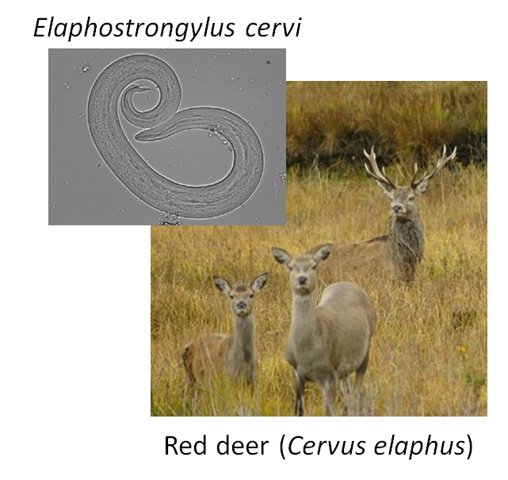
12.1.2 Components of multivariate data
When planning and executing a multivariate analysis it is very important to keep in mind which components of the dataset are which. These components are usually stored in matrices with a well-defined structure. The key concept is that of the sample unit or observation. These are individual observations about which many measurements or attributes are recorded. Sample units correspond to rows of the data matrix. Each sample unit has several attributes or variables associated with it. Variables correspond to columns of the data matrix. The figure below shows the layout of a typical multivariate dataset. The example has 12 observations and 6 variables . In some fields, samples are also called records and variables are called features.
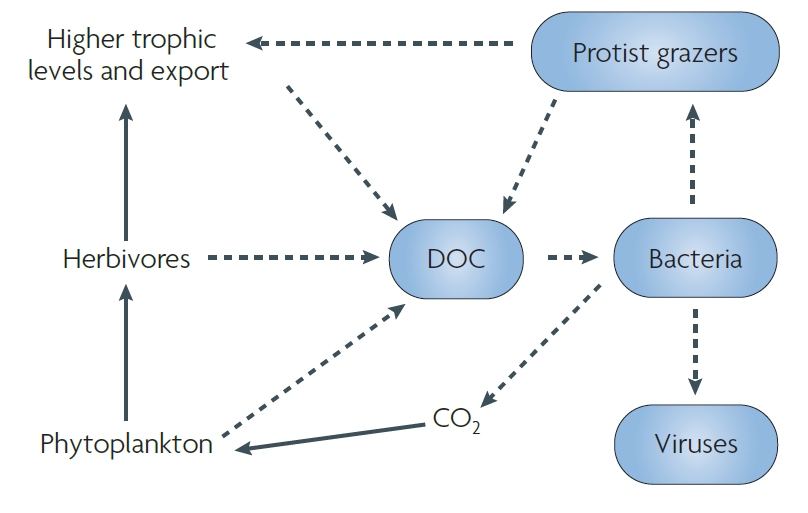
Complex datasets often contain data of different types, or sets of variables that capture information about different aspects of the system. For example, you might have variables that contain species abundances, optical densities, concentrations, femur lengths, treatment groups, and so on. When planning a multivariate analysis you need to consider whether and which variables should be grouped together. In an exploratory analysis, perhaps all of the variables are of interest and no subgroups are needed. In many situations, some of the variables will be the “response” variables. These contain the patterns that you are interested in explaining. Other variables might be considered “explanatory variables”. These are variables that may or may not help explain some of the patterns in the first set of variables. Other variables might contain information about the response variables. For all variables except the first set of “response” variables, the key is whether the values are associated with rows of the main data matrix shown above (i.e., with observations), or whether the values are associated with columns of the main data matrix (i.e., with other variables).
The figure below shows the relationship between three interrelated matrices typical in community ecology. Similar matrices can be defined for other fields…just replace “Environmental variables” with another label that helps describe variation among the sample units.
- The data matrix A contains data on the abundance of 6 species at each of 12 sites.
- The explanatory matrix E contains 4 environmental variables (e.g., temperature, latitude, etc.) for each of the sites. These data describe relationships between observations in A.
- The trait matrix S contains data about traits (e.g., maximum size, longevity, etc.) of the species in the main matrix. These data describe relationships between variables in A.

A biological system of interest might have relationships among all three of these matrices:
- Patterns within A: Explaining groupings or trends among the sites in terms of the species present or absent at each site (or, the abundances of species at each site).
- Patterns within E: Discovering groupings among the sites in terms of their environmental variables.
- Relationships between A and E: Relating patterns in environmental variables to patterns in species abundances across sites.
- Relating patterns between A and E in terms of S: Relating species traits to environmental conditions.
- Patterns within S: Identifying clusters of similar species.
McCune et al. (2002) give a thorough treatment of the relationships between S, E, A, and other matrices derived from them. For this course, we will focus on analyzing A and sometimes E. There is a related set of terminology used to describe multivariate analyses in terms of what is being compared. Analyses that seek relationships among samples are said to be in Q mode; analyses that seek relationships among variables are in R mode (Legendre and Legendre 2012). These terms appear to be particular to ecology, but offer a helpful way to distinguish between different multivariate analysis pathways.
12.2 Distance metrics: biological (dis)similarity
One of the central questions in a multivariate analysis is, “How similar to each other are my samples?” This is a more complicated question than it appears. It’s worth considering for a moment what “similar” even means. Consider the set of organisms below. How would you group them by “similarity”?
Here is one way:
You might have come up with a slightly different set of groupings. This one is just as valid:
These examples illustrate how we might classify the organisms based on qualitative characteristics. But do our choices weight each characteristic equally? After all, fungi and plants are far more different from each other than ants and fish, but the second scheme lumps all non-animals together. Which characteristics of the organisms are really driving our classification decisions?
One way around this problem is to assign numeric scores to characters: 1 if an organism has the trait, and 0 if it doesn’t. The table below illustrates this for a few organisms and characteristics. Note that bacteria have NA for hetertrophy, becuase many bacteria are also autotrophs.
| Taxon | Multicel. | Heterotroph. | Flower. | Vert. | Gills | Amnion | Endotherm. |
|---|---|---|---|---|---|---|---|
| Bacteria | 0 | NA | 0 | 0 | 0 | 0 | 0 |
| Maple | 1 | 0 | 1 | 0 | 0 | 0 | 0 |
| Pine | 1 | 0 | 0 | 0 | 0 | 0 | 0 |
| Octopus | 1 | 1 | 0 | 0 | 1 | 0 | 0 |
| Shark | 1 | 1 | 0 | 1 | 1 | 0 | 0 |
| Mushroom | 1 | 1 | 0 | 0 | 0 | 0 | 0 |
| Frog | 1 | 1 | 0 | 1 | 0 | 0 | 0 |
| Elephant | 1 | 1 | 0 | 1 | 0 | 1 | 1 |
| Penguin | 1 | 1 | 0 | 1 | 0 | 1 | 1 |
| … |
The full table for our organisms has more columns and rows (we’ll get to that later).
The next step is to somehow quantify the similarities between the organisms. It turns out that it’s easier to define dissimilarity than it is define similarity. This is because the range of a similarity metric is ill-defined: there is no natural value to assign to identical samples. I.e., what value should identical samples have? Infinity? Some other arbitrary value? The first isn’t very useful, and the second is highly subjective. Dissimilarity, on the other hand, has a natural value to assign to identical samples: 0. Dissimilarity is often expressed as a distance through a hyperspace. Hyperspace in this context means a coordinate system with one axis (dimension) for each variable in the data.
To quantify distances between taxa, we might try adding up the differences between each pair. We should also square each individual difference, so \(1-0\) counts the same as \(0-1\). Then, we add up the squared differences and take the square root to get back to the original scale. For example, the distance between maple and pine in the table above would be:
\[ D(maple,pine)=\sqrt{(1-1)^{2}+(0-0)^{2}+(1-0)^{2}+(0-0)^{2}+(0-0)^{2}+(0-0)^{2}+(0-0)^{2}}=1\]
The difference between octopus and penguin would be:
\[ D(octopus,penguin)=\sqrt{(1-1)^{2}+(1-1)^{2}+(0-0)^{2}+(0-1)^{2}+(1-0)^{2}+(0-1)^{2}+(0-1)^{2}}=1\]
And the difference between mushrooms and elephants is:
\[ D(mushroom,elephant)=\sqrt{(1-1)^{2}+(1-1)^{2}+(0-0)^{2}+(0-1)^{2}+(1-0)^{2}+(0-1)^{2}+(0-1)^{2}}\approx1.73\]
So, for this set of characteristics, octopuses and penguins are twice as different from each other as are maple trees and pine trees, while mushrooms and elephants are not quite as different from each other as octopuses and penguins. Interestingly, mushrooms and elephants are more different from each other than are maples and pines, even though maples and pines are in the same kingdom while mushrooms and plants are not. Does that make sense biologically?
These comparisons were chosen to make a couple of points about quantifying differences. First, the choice of characteristics (or measurements, or metrics, etc.) has a large influence over the calculation. Look over the list again and ask yourself if those characteristics are applicable to all of the organisms. Four of the eight traits are specific to just the animals! Second, the choice of how to combine the differences makes a big difference. There are other methods we could have chosen (see below) that might have measured dissimilarity differently.
12.2.1 Euclidean distance
The most basic distance metric is the Euclidean distance. This is a generalization of the Pythagorean theorem to an arbitrary number of dimensions. The calculations above were presented in a cumbersome way to show how they work, but the Euclidean distance metric is usually written in a more compact format:
\[D(x_{i},x_{h})=\sqrt{\sum_{j=1}^{p}(x_{i,j}-x_{h,j})^{2}} \]
In this expression the difference between observation i and observation h (\(x[i]\) and \(x[h]\)) is the square root of the sum of squared differences between \(x_{i}\) and \(x_{h}\) in terms of each variable j, up to the number of variables p. When p = 2, this formula reduces to the Pythagorean theorem:
\[D(x_{i},x_{h})=\sqrt{\sum_{j=1}^{2}(x_{i,j}-x_{h,j})^{2}}=\sqrt{(x_{i,1}-x_{h,1})^{2}+(x_{i,2}-x_{h,2})^{2}} \]
Again, the Euclidean distance is just the Pythagorean theorem generalized to p dimensions rather than the usual 2. One way to think of the Pythagorean theorem is as the distance between points on the 2-d plane, with the x and y coordinates as the side lengths of the triangle.
Here and for the rest of this course, “dimension” means the same as “variable”. When thinking about multivariate statistics, it can be useful to think of your data as defining a hyperspace or hypervolume, with one dimension for each variable in your data. Thus a dataset with 2 variables defines a space with 2 dimensions (i.e., a plane); a dataset with 3 dimensions defines a space with 3 dimensions (i.e., a volume), and so on. When discussing multivariate differences between sample units, we usually refer to the differences as distances through these hyperspaces. Each distance metric calculates that distance a slightly different way.
Back to our organism classification example, the figure below shows Euclidean distances for 30 organisms across 12 traits. The distances are distances between each of the 435 unique pairs of taxa in a 12-dimensional hyperspace. Darker colors indicate greater distance—i.e., greater dissimilarity or smaller similarity.
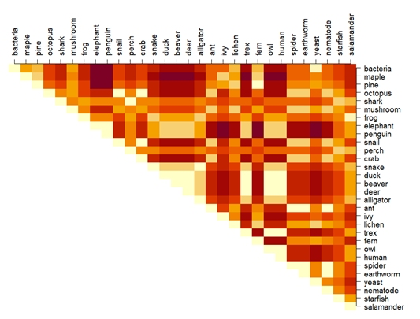
If you examine the chart above you will find that some if the distances are silly: for example, octopuses are presented as more different from owls than they are from bacteria. This suggests that the Euclidean distance metric was maybe not the right one.
12.2.2 Bray-Curtis and other distance metrics
Another distance metric is called the Manhattan or city block distance. It gets its name from the way that distances are added up by assuming that samples can only be connected by paths that move along one axis (i.e., dimension) at a time. This is analogous to how people in cities can walk along the sidewalks of the city street grid, but cannot cut through blocks. The figure below illustrates this.
The Manhattan distance is longer than the Euclidean distance, but it can sometimes be a better representation of the differences between sample units in terms of many variables. The Manhattan distance is calculated as:
\[D(x_{i},x_{h})=\sum_{j=1}^{p}|x_{i,j}-x_{h,j}|\]
The Manhattan distance is not often used by itself, but a relativized version of it is extremely common in biology: the Bray-Curtis distance, also known as the Sørenson distance. This distance measure is called the Sørenson index when used with binary data (such as 1/0 for presence/absence). The name Bray-Curtis is used when the same formula is applied to continuous data (often proportions or percentages). The Bray-Curtis distance is calculated as:
\[D_{BC}(x_{i},x_{h})=\frac{\sum_{j=1}^{p}|x_{i,j}-x_{h,j}|}{\sum_{i=1}^{p}x_{i,j}+\sum_{i=1}^{p}x_{h,j}}=1-\frac{2\sum_{j=1}^{p}MIN(x_{i,j},x_{h,j})}{\sum_{i=1}^{p}x_{i,j}+\sum_{i=1}^{p}x_{h,j}}\]
In the second expression, MIN() is a function that returns the smaller of two values. Notice that the Bray-Curtis distance is essentially the Manhattan distance divided by the shared total values in both samples. This ratio can be thought of as the shared values divided by the total of values. The division makes this value “relativized” (i.e., relative to something else, in the same way that percentages are relative to 100). The figure below shows the approximate relationship between the Euclidean distance, Manhattan distance.
If we recalculate the distance matrix between the taxa in our example, the distances now look like this:
The new distances are an improvement but there is still a lot of room to get better. For example, salamanders are more similar to pines than they are to maples. I’ll leave the interpretation of that finding up to you (hint: there isn’t one…this is a silly example).
There are lots of other distance metrics, but a full exploration is beyond the scope of this course. The table below, adapted from McCune et al. (2002), gives some characteristics of some common measures. The range of input data x and distance measures d is provided. For most biological situations where data are nonnormal and relationships are nonlinear, the Bray-Curtis distance is likely to be the most appropriate. When many variables contain lots of 0s, a modified version can be used that adds a “dummy species” present in every sample to stabilize the distances (Clarke et al. 2006). The Euclidean metric has strong requirements of multivariate normality and collinearity among variables; the Bray-Curtis metric does not. The other metrics aren’t as commonly used as the Euclidean and Bray-Curtis, but are included here for reference.
| Metric | Domain of x | Range of d | Comments |
|---|---|---|---|
| Bray-Curtis (Sørenson) | \(x \le 0\) | \(0 \le d \le 1\) | Preferred in many biological situations |
| Relative Sørenson (Kulczynski) | \(x \le 0\) | \(0 \le d \le 1\) | Relativized by sample totals |
| Jaccard | \(x \le 0\) | \(0 \le d \le 1\) | Related to Manhattan distance |
| Euclidean (Pythagorean) | \(x \in \mathbb{R}\) | \(0 \le d\) | Often requires multivariate normality |
| Relative Euclidean (chord distance) | \(x \in \mathbb{R}\) | \(0 \le d \le \sqrt{2}\) or \(0 \le d \le 2\) | Euclidean distance on a hypersphere |
| Chi-square | \(x \ge 0\) | \(0 \le d\) | Euclidean but weighted by sample and variable totals |
| Squared Euclidean | \(x \in \mathbb{R}\) | \(0 \le d\) | Square of Euclidean distance |
| Mahalanobis | \(x \in \mathbb{R}\) | \(0 \le d\) | Distance between groups weighted by intragroup variance |
Remember that distances express differences between samples with respect to several variables. This can be visualized as a distance through a hyperspace with as many dimensions as you have variables. As we’ll see in the next section, we can use distances to explore similiarites and differences between samples.
12.3 Clustering
Now that we have a way of quantifying multivariate differences between samples as distance, we can use those measures to explore patterns in data. One application of distance metrics is to use them to organize data into clusters or groups consisting of samples that are more similar to each other than they are to other samples. In other words, the within-group distances should be smaller than the between-group distances. The figure below illustrates this concept with an imaginary example. The clusters shown cleanly separate black, red, and blue points. For example, the average distance between the black points is smaller than the average distance between the black points and the red or blue points. Likewise, the average distance between the red points is smaller than the average distance between the red points and the black points or the blue points.
There are many methods for clustering observations. Many methods are hierarchical, with groups being nested within other groups. Hierarchical methods are often the most useful for biologists, because so many of the phenomena we study have some hierarchical nature to them. Other methods are nonhierarchical. Both approaches work by minimizing within-group distances relative to between group distances. The difference is that hierarchical methods have the constraint that larger groups are formed from subgroups.
Clustering methods also differ in their manner of group construction. Many methods are agglomerative, which means that groups are formed by combining samples. Other methods are divisive, which means that all samples start in a single group which is then broken up. Examples of each class of clustering method are shown below.
| Group nature | Group formation | Common methods |
|---|---|---|
| Nonhierarchical | Agglomerative | ?? |
| Nonhierarchical | Divisive | K-means clustering |
| Hierarchical | Agglomerative | Ward clustering (Ward 1963) |
| Hierarchical | Divisive | Association analysis (Ludwig et al. 1988, Legendre and Legendre 2012); TWINSPAN (Hill 1979, Roleček et al. 2009) |
12.3.1 K-means clustering
K-means clustering is a method for dividing a dataset with n observations, with p variables, into k categories such that each observation belongs to the cluster with the most similar mean . The “mean” for each category (i.e., group) is really a position in a p-dimensional hyperspace called a centroid. In this context, centroids are calculated as the point at the central coordinate of each dimension. The mean is most ofen used, but the median can be a useful alternative.
There are several algorithms for k-means clustering. One of the most common works like this:
- Select the desired number of clusters k.
- Make an initial guess of the mean of each cluster. I.e., Start with a k random positions in the p-dimensional hyperspace. These positions are known as centroids.
- Calculate the Euclidean distance between each sample and each centroid.
- Assign each sample to the category corresponding to the nearest centroid.
- Update the centroids for each cluster by calculating the new centroid for the samples assigned to each cluster.
- Repeat steps 3, 4, and 5 until cluster assignments no longer change.
This algorithm is not guaranteed to find the best possible solution, but it usually works. Distance metrics other than the Euclidean can be used, but Euclidean is most common. Transforming, scaling, and/or standardizing variables so that they are all on the same scale can improve the results.
The figure below shows the effects of k-means clustering on a pretend dataset with 2 variables with \(k = 3\). The group assignments were determined because groups with those centroids had the smallest possible set of Euclidean distances between the points and the group centroids (right panel). Group centroids are added to the plot in yellow.
How many clusters are appropriate? That’s a good question to ask, and sometimes a tricky question to answer. One common way to assess the optimal k is to try several k and calculate the within-cluster sum of squared errors (WSS) for all points. The optimal value of k is the value at which a plot of WSS vs. k starts to bend. The example below illustrates this method for the data above.
# generate a random dataset with 3 clusters
set.seed(1234)
x <- c(rnorm(20, 5, 2), rnorm(10, 12, 2))
y <- c(rnorm(10, 3, 2), rnorm(10, 10, 2), rnorm(10, 14, 2))
dat <- data.frame(x,y)
# perform k-means clustering with k from 2 to 8
kvec <- 2:8
nk <- length(kvec)
k.list <- vector("list", nk)
for(i in 1:nk){
k.list[[i]] <- kmeans(dat, kvec[i])
}
# gather WSS for each k
wss <- sapply(k.list, function(x){x$tot.withinss})
# plot WSS vs. k
par(mfrow=c(1,1))
plot(kvec, wss, type="o", lwd=3, pch=1.5,
xlab="Clusters (k)",
ylab="Total WSS")Notice that total WSS drops off much more slowly above 3 clusters. That is, going from 3 to 4 clusters reduces WSS much less than going from 2 to 3 clusters. The result above could reasonably justify 3 or 4 clusters. The figure below shows how the data are divided into 3 and 4 clusters.
# assemble values needed for plots
## get clusters
dat$k3 <- k.list[[which(kvec == 3)]]$cluster
dat$k4 <- k.list[[which(kvec == 4)]]$cluster
## coordinates of group centroids
km3 <- k.list[[which(kvec == 3)]]
km4 <- k.list[[which(kvec == 4)]]
dat$cenx3 <- km3$centers[dat$k3,1]
dat$ceny3 <- km3$centers[dat$k3,2]
dat$cenx4 <- km4$centers[dat$k4,1]
dat$ceny4 <- km4$centers[dat$k4,2]
## colors for each group
dat$col3 <- rainbow(3)[dat$k3]
dat$col4 <- rainbow(4)[dat$k4]
# make plot
par(mfrow=c(1,2))
plot(x,y, pch=16, col=dat$col3, cex=1.4,
xlab="Variable 1", ylab="Variable 2",
main=expression(italic(k)==3))
segments(dat$cenx3, dat$ceny3, dat$x, dat$y,
col=dat$col3, lwd=2, lty=2)
points(dat$cenx3, dat$ceny3, pch=21, cex=2,
bg="yellow", col=dat$col3, lwd=4)
plot(x,y, pch=16, col=dat$col4, cex=1.4,
xlab="Variable 1", ylab="Variable 2",
main=expression(italic(k)==4))
segments(dat$cenx4, dat$ceny4, dat$x, dat$y,
col=dat$col4, lwd=2, lty=2)
points(dat$cenx4, dat$ceny4, pch=21, cex=2,
bg="yellow", col=dat$col4, lwd=4)
Most of the group assignments stayed the same, but the algorithm split the blue group when k increased from 3 to 4. Accepting the 3 cluster or 4 cluster solution is as much of a biological decision as it is a statistical one. When you get to this point, you need to think about whether the groups make sense or not. Notice that k-means clustering does not necessarily result in groups of equal sizes. This may or may not be a problem depending on the structure of your dataset and the question you are trying to answer.
Below is another example of k-means clustering applied to the taxonomy dataset from above. Examine the figure and ask yourself whether the groupings make sense from a biological perspective. Note that the code block below requires that you have the data file tax_example_2021-10-27.csv in your R home directory. Download it here. Note that this is a completely made-up dataset, so you should not use it for anything important.
set.seed(123)
in.name <- "tax_example_2021-10-27.csv"
dat <- read.csv(in.name, header=TRUE)
rownames(dat) <- dat$organism
dat$organism <- NULL
kvec <- 2:8
nk <- length(kvec)
k.list <- vector("list", nk)
for(i in 1:nk){
k.list[[i]] <- kmeans(dat, kvec[i])
}
wss <- sapply(k.list, function(x){x$tot.withinss})
par(mfrow=c(1,1))
plot(kvec, wss, type="o", lwd=3, pch=1.5,
xlab="Clusters (k)",
ylab="Total WSS")
Four clusters appears to be the “elbow” of the curve, but this varied from run to run (try changing the random number seed and seeing if you get different results). Let’s use k = 4.
# assemble values needed for plots
## get clusters
dat$k4 <- k.list[[which(kvec == 4)]]$cluster
## coordinates of group centroids
km4 <- k.list[[which(kvec == 4)]]
dat$cenx4 <- km4$centers[dat$k4,1]
dat$ceny4 <- km4$centers[dat$k4,2]
## colors for each group
dat$col4 <- rainbow(4)[dat$k4]
# use PCA to define a reduced dimensional space
# (we'll cover PCA in detail later)
pr1 <- prcomp(dat[,1:12])
dat$x <- pr1$x[,1]
dat$y <- pr1$x[,2]
# make plot
par(mfrow=c(1,1))
plot(dat$x, dat$y, type="n",
xlab="PC 1(54%)", ylab="PC2 (19%)")
text(dat$x, jitter(dat$y, amount=0.1),
rownames(dat), col=dat$col4)
It’s a little hard to see some of the names, even with the jittering of the Y coordinates. How did the algorithm do? The groups appear to mostly make sense, but there are some oddities. For example:
- Elephants and penguins are more similar than either is to other mammals or birds, respectively (although they are in the same group).
- Salamanders and frogs were grouped with fish and echinoderms, despite being tetrapods.
- Mushrooms are clustered with the protostome invertebrates, despite being more closely related to yeast (which are grouped with the microbes and plants).
So, the results of the k-means clustering are mostly okay, but there is definitely plenty of room for improvement.
12.3.2 Hierarchical agglomerative clustering
One key disadvantage of k-means clustering is that it is not hierarchical: all groups are assumed to be homogenous, with no within-group structure or subgroups. In biological systems this is rarely the case. Many biological phenomena can be understood as hierarchical: for example, phylogeny and taxonomy. Hierarchical clustering can help discover, or at take advantage of, these relationships within your data.
There are many methods of hierarchical clustering, just as there were many methods of k-means clustering. One of the most common is Ward’s method (Ward 1963), which has many variations. The basic procedure is:
- Start with every sample separate (i.e., in its own cluster).
- Find a pair of clusters to combine that leads to the smallest increase in total within-cluster variance
- Repeat step 2 until a stopping point is reached (varies by method).
The within-cluster variance is an example of an objective function, which measures how effectively a statistical model represents the data. Different versions of Ward’s method use different objective functions. The most common is the Euclidean distance between cluster centroids. Squared Euclidean distance and other metrics are also seen in the literature.
The example below applies hierarchical clustering to the taxonomy dataset seen above. The base R function for hierarchical clustering is hclust(). The data are provided as a distance matrix rather than as raw values. We’ll use the vegdist() function from package vegan instead of the base R dist() function because it offers more distance metrics. Note that the code below assumes that you have the data file tax_example_2021-10-27.csv (here) in your R home directory.
set.seed(123)
in.name <- "tax_example_2021-10-27.csv"
dat <- read.csv(in.name, header=TRUE)
rownames(dat) <- dat$organism
dat$organism <- NULL
library(vegan)## Loading required package: permute## Loading required package: lattice## This is vegan 2.6-2d1 <- vegdist(dat, method="euclidean")
d2 <- vegdist(dat) # default bray-curtis
h1 <- hclust(d1, method="ward.D")
plot(h1)
The results of hierarchical clustering are usually presented as a dendrogram. The word root dendro- means “tree”, which is a good way to think of a dendrogram. The branches show the relationship between the clusters. In the result above, pines and ferns form a cluster, as do maple and ivy. The “pine-fern” and “maple-ivy” clusters together form a bigger cluster.
The clustering based on Bray-Curtis distances is slightly different:
h2 <- hclust(d2, method="ward.D")
plot(h2)The results using the Euclidean and Bray-Curtis distance metrics are similar, but both dendrograms make some “interesting” choices. For example, one would expect the most basal (toward the root of the tree) division between animals and non-animals, or between prokaryotes and eukaryotes. Is that the case?
Not at all. The method clustered the taxa in a way that doesn’t match their real-life phylogenetic relationships. This is partly because of the characteristics that were used (a very vertebrate animal-centric set!). This also illustrates the difference between taxonomy, which seeks to combine organisms by shared characteristics; and phylogeny, which results from how lineages divide over time.
12.4 Analyzing dissimilarity
A metric like the Bray-Curtis or Euclidean metric can quantify how different samples are from each other in terms of many variables simultaneously. The natural next question to ask is, “So what?”. Just as we can compare means between groups, or measure whether two variables are correlated, we can compare distances between groups or test whether two sets of distances are correlated. This document demonstrates some ways to use distance metrics to generalize common univariate and bivariate tests to patterns in higher dimensions.
12.4.1 Mantel tests: distance vs. distance
One way to use distance metrics in a biological investigation is to calculate different distances between samples using different sets of variables, and then see if those distances are related. For example, an ecologist might calculate distances between sites using plant cover data, and a separate set of distances using soil chemistry data. She would then have one distance metric describing differences between the sites in terms of their plant cover, and a second distance metric describing differences between the sites in terms of their soil characteristics. A natural question to ask then is, “is distance in terms of plant cover related to distance in terms of soil chemistry?”. In other words, “do sites that are more similar in terms of their soil chemistry tend to be more similar in terms of their plant cover?”
Answering these questions is tantamount to calculating a correlation coefficient between two vectors of distance metrics. This procedure is called a Mantel test (Mantel 1967). The Mantel correlation coefficient r answers the question, “How is variation in one set of variables related to variation in another set of variables?”.
The example below uses the iris dataset to test whether variation in petal morphology is related to variation in sepal morphology. Note that while the Euclidean distance metric is used here because data are known to be multivariate normal, the Bray-Curtis or other metrics may be more appropriate in other situations.
# get sepal and petal variables from iris
x1 <- iris[,grep("Sepal", names(iris))]
x2 <- iris[,grep("Petal", names(iris))]
# calculate distance metrics
library(vegan)
d1 <- vegdist(x1, method="euclidean")
d2 <- vegdist(x2, method="euclidean")
d3 <- vegdist(x1) # vegdist() default metric = Bray-Curtis
d4 <- vegdist(x2)
# Mantel test on Euclidean distances
mantel(d1, d2)##
## Mantel statistic based on Pearson's product-moment correlation
##
## Call:
## mantel(xdis = d1, ydis = d2)
##
## Mantel statistic r: 0.7326
## Significance: 0.001
##
## Upper quantiles of permutations (null model):
## 90% 95% 97.5% 99%
## 0.0242 0.0330 0.0409 0.0490
## Permutation: free
## Number of permutations: 999The Mantel statistic r is exactly the same as the Pearson product moment correlation r between the two sets of distance metrics (verify this with the command cor(d1, d2)). The significance of the Mantel r is usually calculated by a permutation test instead of the more conventional methods . A permutation test for significance works by rearranging, or permuting, the observations many times and comparing a statistic (r) to the distribution of the statistic across the permutations. The P-value is calculated as the proportion of permutations that had a statistic with a magnitude at least as great as the original statistic. In the example above, P = 0.001 because at most 1 out of 999 permutations had an r \(\ge\) 0.7326.
The function below will replicate the permutation test done for the Mantel test above. This function is provided for didactic purposes only. You should use the methods built into R and vegan instead. But, studying the code below can help you understand how a permutation test works.
simple.ptest <- function(dm1, dm2, n=999){
r <- cor(dm1, dm2)
dn <- length(dm1)
rvec <- numeric(dn)
for(i in 1:dn){
i1 <- d1[sample(1:dn, replace=FALSE)]
i2 <- d2[sample(1:dn, replace=FALSE)]
rvec[i] <- cor(i1, i2)
}
res <- length(which(rvec >= r))/dn
return(res)
}
simple.ptest(d1, d2, 999)## [1] 0Mantel tests are usually reported by their numerical outputs, but you can plot the results if the test is central to your presentation. The simplest way is to plot the distance metrics on a scatterplot. The example below uses partial transparency to better show the overlapping points. A diagonal red line shows where the two dissimilarities are equal.
plot(d1, d2, pch=16, col="#00000020",
xlab="Sepal dissimilarity (Eucl.)",
ylab="Petal dissimilarity (Eucl.)")
segments(0, 0, max(d1), max(d2),
lwd=3, col="red")
The figure shows what the Mantel r statistic already indicated: that flowers with similar sepal morphology tend to have similar petal morphology.
Just for fun, the figure below visualizes the Mantel correlation based on the Euclidean (left) and Bray-Curtis (right) distances.
d3 <- vegdist(x1) # default Bray-Curtis
d4 <- vegdist(x2)
mantel(d3, d4)
##
## Mantel statistic based on Pearson's product-moment correlation
##
## Call:
## mantel(xdis = d3, ydis = d4)
##
## Mantel statistic r: 0.6552
## Significance: 0.001
##
## Upper quantiles of permutations (null model):
## 90% 95% 97.5% 99%
## 0.0260 0.0365 0.0459 0.0578
## Permutation: free
## Number of permutations: 999
par(mfrow=c(1,2), mar=c(5.1, 5.1, 1.1, 1.1),
bty="n", lend=1, las=1,
cex.axis=1.3, cex.lab=1.3)
plot(d1, d2, pch=16, col="#00000020",
xlab="Sepal dissimilarity (Euclidean)",
ylab="Petal dissimilarity (Euclidean)")
segments(0, 0, max(d1), max(d2),
lwd=3, col="red")
plot(d3, d4, pch=16, col="#00000020",
xlab="Sepal dissimilarity (Bray-Curtis)",
ylab="Petal dissimilarity (Bray-Curtis)")
segments(0, 0, max(d3), max(d4),
lwd=3, col="red")
Interestingly, the Bray-Curtis distances seemed to fall into two clusters in terms of the petal dissimilarity. That probably has something to do with the difference between I. setosa and the other species, but I haven’t investigated it.
The Mantel test can also be performed with correlation coefficients other than the linear correlation coefficient. This makes sense if the correlation appears nonlinear. For example, if one dissimilarity metric increases consistently with the other dissimilarity metric, but not in a straight line. The most common alternative is the Spearman’s rank correlation coefficient \(\rho\) (“rho”).
# euclidean distance metric
mantel(d1, d2, method="spearman")##
## Mantel statistic based on Spearman's rank correlation rho
##
## Call:
## mantel(xdis = d1, ydis = d2, method = "spearman")
##
## Mantel statistic r: 0.7258
## Significance: 0.001
##
## Upper quantiles of permutations (null model):
## 90% 95% 97.5% 99%
## 0.0197 0.0253 0.0298 0.0362
## Permutation: free
## Number of permutations: 999# bray-curtis metric
mantel(d3, d4, method="spearman")##
## Mantel statistic based on Spearman's rank correlation rho
##
## Call:
## mantel(xdis = d3, ydis = d4, method = "spearman")
##
## Mantel statistic r: 0.69
## Significance: 0.001
##
## Upper quantiles of permutations (null model):
## 90% 95% 97.5% 99%
## 0.0247 0.0331 0.0392 0.0540
## Permutation: free
## Number of permutations: 999Changing from a linear to nonlinear correlation coefficient slightly decreased the Mantel correlation for the Euclidean distances (0.7326 to 0.7258), and slightly increased the correlation for the Bray-Curtis distances (0.6552 to 0.69). Examine the figure above and see if you can work out why this is.
The figure below shows the two sets of distances with two lines: a straight line to represent the linear correlation r and a spline curve to represent the nonlinear correlation \(\rho\).
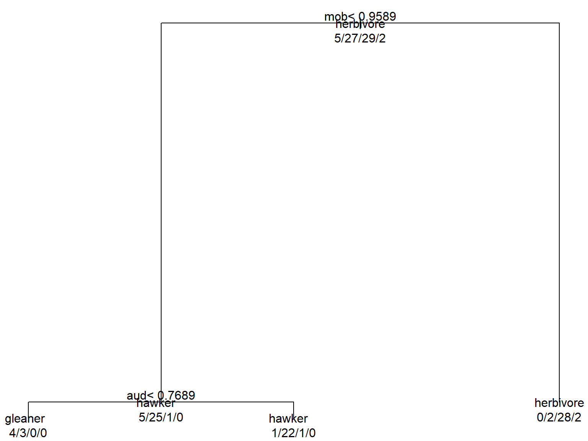
12.4.2 Comparing dissimilarity between groups
Just as the Mantel test generalizes the idea of correlation from “one variable vs. one variable” to “many variables vs. many variables”, other techniques generalize the idea of group differences from “difference in means between groups” to “differences in centroids between groups”. This section demonstrates three common tests for multivariate differences between groups.
12.4.2.1 Analysis of similarity (ANOSIM): distances between groups
The analysis of similarities (ANOSIM) is a nonparametric, ANOVA-like test that tests whether similarity between groups is greater than or equal to the similarity within groups (Clarke 1993). This is analogous to how ANOVA tests whether the difference in means (i.e., variance) between groups is greater than or equal to the variance within groups. What makes the test nonparametric is that it operates on the rank-transformed distance matrix rather than on the actual distance metrics.
The vegan function anosim() is used for ANOSIM. The function takes the original data matrix, a grouping variable, and can use any distance metric available in vegan::vegdist(). The example below uses the Euclidean metric because the data are known to be multivariate normal; you may need to use the Bray-Curtis or another metric with your own data.
a1 <- anosim(iris[,1:4],
grouping=iris$Species,
distance="euclidean")
a1##
## Call:
## anosim(x = iris[, 1:4], grouping = iris$Species, distance = "euclidean")
## Dissimilarity: euclidean
##
## ANOSIM statistic R: 0.8794
## Significance: 0.001
##
## Permutation: free
## Number of permutations: 999Like the Mantel test, ANOSIM estimates a P-value by permutation. In this case, the permutation is of group membership. The underlying idea is that if there are no differences between groups (i.e., if the null hypothesis were true), then group membership is irrelevant and changing group memberships should not affect any test statistics. The ANOSIM statistic R expresses the relationship between the difference in mean ranks between groups (\(mr_{between}\)) and the within groups (\(mr_{within}\)).
\[R=\frac{mr_{between}-mr_{within}}{\frac{1}{4}n(n-1)}\]
The denominator scales the difference in mean ranks from -1 to 1. R = 0 means that grouping is unrelated to differences in mean ranks; greater R values indicate that differences between groups are greater than differences within groups; smaller R values indicate the reverse. The R value in our test above suggests that about 87.9% of the variation in the rank order of the distance matrix can be attributed to differences between species of Iris.
12.4.2.2 MANOVA and PERMANOVA: distances between centroids
Multivariate analysis of variance (MANOVA) is an extension of ANOVA with multiple response variables. The underlying theory and matrix algebra is very similar to ANOVA, and so many of the same assumptions apply (just in many dimensions instead of one). For that reason, MANOVA is often not appropriate for real biological data without careful experimental design and exploratory data analysis to confirm that the test’s assumptions are met.
Y <- as.matrix(iris[,1:4])
mod1 <- manova(Y~iris$Species)
# (M)ANOVA table
summary(mod1, test="Pillai")## Df Pillai approx F num Df den Df Pr(>F)
## iris$Species 2 1.1919 53.466 8 290 < 2.2e-16 ***
## Residuals 147
## ---
## Signif. codes: 0 '***' 0.001 '**' 0.01 '*' 0.05 '.' 0.1 ' ' 1# coefficients for each response and level of predictor
coef(mod1)## Sepal.Length Sepal.Width Petal.Length Petal.Width
## (Intercept) 5.006 3.428 1.462 0.246
## iris$Speciesversicolor 0.930 -0.658 2.798 1.080
## iris$Speciesvirginica 1.582 -0.454 4.090 1.780Permutational analysis of variance (PERMANOVA) is a nonparametric version of MANOVA (Anderson 2001). It is nonparametric because it uses permutation of group membership to determine statistical significance instead of calculating an F statistic based on probability theory. The most common R function for PERMANOVA is adonis() from the vegan package.
mod2 <- adonis(iris[,1:4]~iris$Species, method="euclidean")## 'adonis' will be deprecated: use 'adonis2' instead# (perm)anova table
mod2## $aov.tab
## Permutation: free
## Number of permutations: 999
##
## Terms added sequentially (first to last)
##
## Df SumsOfSqs MeanSqs F.Model R2 Pr(>F)
## iris$Species 2 592.07 296.037 487.33 0.86894 0.001 ***
## Residuals 147 89.30 0.607 0.13106
## Total 149 681.37 1.00000
## ---
## Signif. codes: 0 '***' 0.001 '**' 0.01 '*' 0.05 '.' 0.1 ' ' 1
##
## $call
## adonis(formula = iris[, 1:4] ~ iris$Species, method = "euclidean")
##
## $coefficients
## Sepal.Length Sepal.Width Petal.Length Petal.Width
## (Intercept) 5.84333333 3.0573333 3.758 1.1993333
## iris$Species1 -0.83733333 0.3706667 -2.296 -0.9533333
## iris$Species2 0.09266667 -0.2873333 0.502 0.1266667
##
## $coef.sites
## 1 2 3 4 5 6
## (Intercept) 2.8892340 2.932070 3.0373304 2.9639564 2.9266470 2.7849577
## iris$Species1 -2.3894466 -2.309988 -2.4335158 -2.3022888 -2.4074064 -1.9931842
## iris$Species2 0.4324901 0.363739 0.4312659 0.3599922 0.4448095 0.2812833
## 7 8 9 10 11 12
## (Intercept) 3.0053629 2.8351245 3.1393122 2.8910823 2.8635356 2.8409607
## iris$Species1 -2.3832641 -2.3505245 -2.2629858 -2.3086660 -2.2112568 -2.3009453
## iris$Species2 0.4169935 0.4043765 0.3335496 0.3649534 0.3678361 0.3758812
## 13 14 15 16 17 18
## (Intercept) 2.9883034 3.3924246 3.1928037 3.1310544 3.0101269 2.8665166
## iris$Species1 -2.3372753 -2.4125103 -2.1135038 -1.8890494 -2.2295880 -2.3651240
## iris$Species2 0.3742882 0.4106588 0.3594139 0.2849863 0.3957443 0.4225787
## 19 20 21 22 23 24
## (Intercept) 2.7965288 2.8867777 2.7130098 2.8388722 3.3344784 2.6672606
## iris$Species1 -1.8836437 -2.2825488 -2.0506280 -2.2641179 -2.5286816 -2.0485926
## iris$Species2 0.2317649 0.4016389 0.2681274 0.3880572 0.4979499 0.2569348
## 25 26 27 28 29 30
## (Intercept) 2.7268403 2.8025771 2.745977 2.8217489 2.8697924 2.8679581
## iris$Species1 -2.0403665 -2.1633699 -2.218718 -2.3013658 -2.3448480 -2.2688357
## iris$Species2 0.2472055 0.2909161 0.342868 0.3916436 0.4076628 0.3481531
## 31 32 33 34 35 36
## (Intercept) 2.8376756 2.7728738 3.0515258 3.1153067 2.8597573 3.0279073
## iris$Species1 -2.2383384 -2.1353882 -2.2175402 -2.1275662 -2.2953016 -2.4341263
## iris$Species2 0.3292305 0.3153343 0.3909343 0.3677376 0.3596457 0.4376419
## 37 38 39 40 41 42
## (Intercept) 2.9579001 2.9827223 3.1840043 2.8188501 2.9500788 3.3041272
## iris$Species1 -2.2537940 -2.4283233 -2.3453389 -2.3259629 -2.4269673 -2.0162231
## iris$Species2 0.3807656 0.4510517 0.3781729 0.3947647 0.4509483 0.2032206
## 43 44 45 46 47 48
## (Intercept) 3.1726614 2.7502024 2.6946692 2.937039 2.8594377 3.014917
## iris$Species1 -2.3948843 -2.1244118 -1.9339532 -2.296532 -2.2409066 -2.383676
## iris$Species2 0.4105087 0.3088334 0.2344409 0.357381 0.3792724 0.405190
## 49 50 51 52 53 54
## (Intercept) 2.8616252 2.8881932 2.2525545 1.985563 2.2279912 2.0702907
## iris$Species1 -2.2567432 -2.3878545 1.7579354 1.626441 1.9352605 0.9848417
## iris$Species2 0.3862939 0.4179351 -0.9380221 -1.065264 -0.9384972 -1.1217384
## 55 56 57 58 59 60
## (Intercept) 2.006940 1.946104 2.023269 2.31389594 2.042795 2.0684602
## iris$Species1 1.774891 1.442300 1.752873 -0.01894909 1.702885 0.7792808
## iris$Species2 -1.099811 -1.173551 -1.015676 -0.75904201 -1.089568 -1.0305410
## 61 62 63 64 65 66
## (Intercept) 2.3959800 1.898991 2.106994 1.947476 1.9821400 2.065381
## iris$Species1 0.2514352 1.312227 1.018817 1.733847 0.5824349 1.565894
## iris$Species2 -0.8550060 -1.138329 -1.110100 -1.135437 -0.9816842 -1.041137
## 67 68 69 70 71 72
## (Intercept) 1.967252 1.950630 2.113967 1.9995189 2.0465790 1.918150
## iris$Species1 1.438995 1.041303 1.627844 0.8556877 1.7833208 1.148307
## iris$Species2 -1.116956 -1.153092 -1.124071 -1.1195749 -0.9951128 -1.139245
## 73 74 75 76 77 78
## (Intercept) 2.093257 1.978791 1.956229 2.018040 2.162789 2.1714644
## iris$Species1 1.930565 1.660882 1.455736 1.578787 1.879405 2.0636398
## iris$Species2 -1.071325 -1.150556 -1.132359 -1.081199 -1.018915 -0.9295318
## 79 80 81 82 83 84
## (Intercept) 1.909461 2.0403007 2.0545849 2.0782370 1.9295912 2.108125
## iris$Species1 1.601937 0.4401509 0.7312103 0.5941295 0.9475627 1.996850
## iris$Species2 -1.156439 -0.9618897 -1.0759866 -1.0304176 -1.1350577 -1.016393
## 85 86 87 88 89 90
## (Intercept) 2.030206 2.001706 2.094015 2.076341 1.926677 2.002990
## iris$Species1 1.347177 1.506048 1.815202 1.522759 1.051463 0.984225
## iris$Species2 -1.082349 -1.023237 -1.014657 -1.143663 -1.116479 -1.135924
## 91 92 93 94 95 96
## (Intercept) 2.013904 1.927882 1.938647 2.3061497 1.939616 1.917175
## iris$Species1 1.262987 1.652224 1.050013 0.0328936 1.183859 1.137945
## iris$Species2 -1.160573 -1.138800 -1.165676 -0.7870907 -1.175743 -1.140102
## 97 98 99 100 101 102
## (Intercept) 1.905673 1.912455 2.2834719 1.908784 2.8859925 2.1814222
## iris$Species1 1.197791 1.423256 -0.2289406 1.126053 2.3697370 1.9896392
## iris$Species2 -1.165683 -1.162249 -0.6651148 -1.167947 -0.6221959 -0.9555383
## 103 104 105 106 107 108
## (Intercept) 2.8381091 2.3772447 2.6199411 3.5611917 2.3348726 3.1541039
## iris$Species1 2.4488568 2.2866266 2.4109392 2.5212356 1.1982025 2.4684714
## iris$Species2 -0.6249934 -0.8030747 -0.6745652 -0.5470861 -0.9828152 -0.6110247
## 109 110 111 112 113 114
## (Intercept) 2.6477228 3.2266038 2.2224571 2.262251 2.488981 2.2401519
## iris$Species1 2.3747443 2.4015453 2.1189702 2.232250 2.348135 1.9077408
## iris$Species2 -0.7647924 -0.5348455 -0.8321994 -0.865030 -0.710040 -0.9676526
## 115 116 117 118 119 120
## (Intercept) 2.3746350 2.3922204 2.3415242 3.8203939 3.9161799 2.230455
## iris$Species1 2.0033566 2.2121281 2.2836397 2.4153363 2.5635753 1.874758
## iris$Species2 -0.8465586 -0.7385819 -0.7941052 -0.4956698 -0.5577502 -1.052357
## 121 122 123 124 125 126
## (Intercept) 2.7117980 2.1759595 3.6787169 2.072870 2.5981361 2.9081568
## iris$Species1 2.3939596 1.8129201 2.5192496 2.013788 2.3550937 2.3946705
## iris$Species2 -0.6247993 -0.9681854 -0.5610691 -1.001747 -0.6581039 -0.6246297
## 127 128 129 130 131 132
## (Intercept) 2.020675 2.0366620 2.4598390 2.7652400 3.0838785 3.6880125
## iris$Species1 1.933883 1.9476715 2.3525501 2.3236295 2.4499296 2.3287844
## iris$Species2 -1.028267 -0.9918386 -0.7511859 -0.6953429 -0.6226694 -0.5098022
## 133 134 135 136 137 138
## (Intercept) 2.4944892 2.103315 2.4078582 3.3334154 2.6128326 2.3313432
## iris$Species1 2.3573254 2.036322 2.1310919 2.4471836 2.2547289 2.2542404
## iris$Species2 -0.7366476 -1.003455 -0.9081021 -0.5625324 -0.6675313 -0.7951429
## 139 140 141 142 143 144
## (Intercept) 2.011807 2.4861618 2.6273656 2.4565589 2.1814222 2.7993263
## iris$Species1 1.859832 2.2981688 2.3720625 2.1692565 1.9896392 2.4387344
## iris$Species2 -1.020472 -0.7122923 -0.6521569 -0.7406391 -0.9555383 -0.6082445
## 145 146 147 148 149 150
## (Intercept) 2.7530983 2.4067977 2.1794279 2.2380730 2.4653387 2.1249645
## iris$Species1 2.3634427 2.2298795 2.0694293 2.2027052 2.1616296 1.9854215
## iris$Species2 -0.6147642 -0.7495877 -0.9630639 -0.8287863 -0.7220177 -0.9498832
##
## $f.perms
## [,1]
## [1,] 0.97993325
## [2,] 0.85034097
## [3,] 0.14656450
## [4,] 2.10454680
## [5,] 0.34716384
## [6,] 0.96611217
## [7,] 1.64519268
## [8,] 1.29718448
## [9,] 0.63484097
## [10,] 0.44062440
## [11,] 0.16901140
## [12,] 0.60745941
## [13,] 4.54115098
## [14,] 0.24581556
## [15,] 1.32771666
## [16,] 0.22466760
## [17,] 1.05608536
## [18,] 0.66000243
## [19,] 0.22288773
## [20,] 5.17148182
## [21,] 2.14456145
## [22,] 0.84468988
## [23,] 0.96575785
## [24,] 0.17768182
## [25,] 0.45154281
## [26,] 1.95141230
## [27,] 0.96890255
## [28,] 0.25902290
## [29,] 0.36476502
## [30,] 2.58781191
## [31,] 1.70120545
## [32,] 0.49664818
## [33,] 1.62675067
## [34,] 0.93379444
## [35,] 2.63023779
## [36,] 0.37265342
## [37,] 1.88726338
## [38,] 0.07303632
## [39,] 0.51716484
## [40,] 2.80818162
## [41,] 0.60250305
## [42,] 0.47059225
## [43,] 0.24029942
## [44,] 0.41268794
## [45,] 2.92327723
## [46,] 0.24342658
## [47,] 0.22675146
## [48,] 0.60978430
## [49,] 0.30637358
## [50,] 1.19900697
## [51,] 0.30032635
## [52,] 0.24147207
## [53,] 1.52640282
## [54,] 3.47881531
## [55,] 0.73840657
## [56,] 2.03298245
## [57,] 0.89845415
## [58,] 1.47913566
## [59,] 3.02412491
## [60,] 1.89616139
## [61,] 2.29664626
## [62,] 0.55074220
## [63,] 1.07713557
## [64,] 2.55725943
## [65,] 1.24681398
## [66,] 0.42818134
## [67,] 0.92883858
## [68,] 2.06238542
## [69,] 0.07528456
## [70,] 1.04871615
## [71,] 0.15020361
## [72,] 0.51029553
## [73,] 0.26545450
## [74,] 0.39794252
## [75,] 1.62382062
## [76,] 0.50517718
## [77,] 0.10915453
## [78,] 0.78333378
## [79,] 3.32039892
## [80,] 0.88740337
## [81,] 2.58536126
## [82,] 0.71446761
## [83,] 0.27814717
## [84,] 0.67357827
## [85,] 1.79636093
## [86,] 0.16081973
## [87,] 0.60281006
## [88,] 0.51309560
## [89,] 0.55380814
## [90,] 1.25640951
## [91,] 0.13677535
## [92,] 2.85895605
## [93,] 0.28823487
## [94,] 0.81724135
## [95,] 0.16298666
## [96,] 2.78158808
## [97,] 1.56504257
## [98,] 0.37199962
## [99,] 0.86266156
## [100,] 0.62966149
## [101,] 0.11413168
## [102,] 0.65064722
## [103,] 1.81678920
## [104,] 2.41549599
## [105,] 0.19823886
## [106,] 0.51064552
## [107,] 2.38448379
## [108,] 1.31752159
## [109,] 0.82522669
## [110,] 2.25142871
## [111,] 0.42962190
## [112,] 0.14938045
## [113,] 0.06512533
## [114,] 1.21050717
## [115,] 0.55849514
## [116,] 0.23639085
## [117,] 1.08610994
## [118,] 1.18412437
## [119,] 0.51038302
## [120,] 1.18247606
## [121,] 4.87113616
## [122,] 0.87507459
## [123,] 0.54588101
## [124,] 0.84791266
## [125,] 4.14366595
## [126,] 0.28301675
## [127,] 0.50723318
## [128,] 0.15405972
## [129,] 1.09250884
## [130,] 0.16064638
## [131,] 0.19884621
## [132,] 0.58250892
## [133,] 1.76539995
## [134,] 2.73393349
## [135,] 2.16056088
## [136,] 0.99234115
## [137,] 1.46539802
## [138,] 1.74074896
## [139,] 0.41997557
## [140,] 0.14309902
## [141,] 0.76808768
## [142,] 0.21876397
## [143,] 0.21411987
## [144,] 0.93737899
## [145,] 0.99686219
## [146,] 0.35326231
## [147,] 0.25285309
## [148,] 3.16249239
## [149,] 0.70070090
## [150,] 0.28049492
## [151,] 0.13266122
## [152,] 0.45591108
## [153,] 1.18064965
## [154,] 2.43340626
## [155,] 1.33366506
## [156,] 1.23637327
## [157,] 0.12443434
## [158,] 1.23414273
## [159,] 0.60035404
## [160,] 0.26910537
## [161,] 2.18809574
## [162,] 0.71301592
## [163,] 0.64568509
## [164,] 0.99836933
## [165,] 1.37380795
## [166,] 1.06545434
## [167,] 0.45263483
## [168,] 1.33576735
## [169,] 0.33762611
## [170,] 0.15479633
## [171,] 0.89880782
## [172,] 0.34333103
## [173,] 1.11237907
## [174,] 0.49979712
## [175,] 1.49148587
## [176,] 0.80586189
## [177,] 0.20656903
## [178,] 0.87366080
## [179,] 0.29462807
## [180,] 1.73573029
## [181,] 1.05044734
## [182,] 0.71103645
## [183,] 3.38710551
## [184,] 1.48174009
## [185,] 1.69700499
## [186,] 0.75637093
## [187,] 0.93060845
## [188,] 0.88099543
## [189,] 1.93341051
## [190,] 0.43088789
## [191,] 0.14530822
## [192,] 0.25359168
## [193,] 0.63830898
## [194,] 2.15123468
## [195,] 0.81097780
## [196,] 0.35295736
## [197,] 0.46023618
## [198,] 0.07286338
## [199,] 0.04192092
## [200,] 1.08904263
## [201,] 0.32604479
## [202,] 0.18678795
## [203,] 0.36602879
## [204,] 1.15250740
## [205,] 1.32096435
## [206,] 1.73048625
## [207,] 0.78130648
## [208,] 0.15722290
## [209,] 0.12482399
## [210,] 1.06398889
## [211,] 0.74082773
## [212,] 0.04844433
## [213,] 0.86266156
## [214,] 4.88580696
## [215,] 1.32176920
## [216,] 0.86297073
## [217,] 0.05678388
## [218,] 0.37143300
## [219,] 1.99745592
## [220,] 1.06190184
## [221,] 2.19834639
## [222,] 1.11011146
## [223,] 1.26426628
## [224,] 0.53948798
## [225,] 0.27366946
## [226,] 1.77734678
## [227,] 0.08739285
## [228,] 0.32669778
## [229,] 1.60705612
## [230,] 0.57948443
## [231,] 0.23048534
## [232,] 1.18234242
## [233,] 0.74034349
## [234,] 1.41314228
## [235,] 0.09470299
## [236,] 1.32118792
## [237,] 1.25489191
## [238,] 1.94209212
## [239,] 1.29209076
## [240,] 1.09375319
## [241,] 0.13603910
## [242,] 0.15020361
## [243,] 0.13863769
## [244,] 0.12274589
## [245,] 0.85206296
## [246,] 0.46674662
## [247,] 0.15730957
## [248,] 0.20444292
## [249,] 0.93029872
## [250,] 0.05985228
## [251,] 1.17508185
## [252,] 0.26532412
## [253,] 2.27150855
## [254,] 0.63826508
## [255,] 0.34833990
## [256,] 0.86990567
## [257,] 2.84833949
## [258,] 0.76733875
## [259,] 0.54820204
## [260,] 1.27400026
## [261,] 2.01872227
## [262,] 0.31276992
## [263,] 0.73189224
## [264,] 0.61632110
## [265,] 0.88227693
## [266,] 0.40596888
## [267,] 1.90874021
## [268,] 0.19112500
## [269,] 0.33253163
## [270,] 2.95683245
## [271,] 1.95536839
## [272,] 0.50710195
## [273,] 0.57641636
## [274,] 4.12229299
## [275,] 4.05589052
## [276,] 0.38010754
## [277,] 0.41316792
## [278,] 0.60741554
## [279,] 0.12564660
## [280,] 1.61255333
## [281,] 0.61733023
## [282,] 0.63773828
## [283,] 0.93113943
## [284,] 0.73374078
## [285,] 0.27440847
## [286,] 0.65323834
## [287,] 0.94419503
## [288,] 1.55847235
## [289,] 1.17289951
## [290,] 1.30424535
## [291,] 0.43900875
## [292,] 0.17694475
## [293,] 1.25716833
## [294,] 0.36106111
## [295,] 0.47168483
## [296,] 0.93538753
## [297,] 0.82990399
## [298,] 0.29819483
## [299,] 0.21928485
## [300,] 1.32002539
## [301,] 0.14106320
## [302,] 0.37056130
## [303,] 1.27922551
## [304,] 0.33187854
## [305,] 1.37497215
## [306,] 3.50082981
## [307,] 1.49310292
## [308,] 0.21945847
## [309,] 1.29128656
## [310,] 4.10122037
## [311,] 2.30444785
## [312,] 0.15644292
## [313,] 0.39728827
## [314,] 1.12945725
## [315,] 1.65917677
## [316,] 0.93613985
## [317,] 1.17383478
## [318,] 0.54701961
## [319,] 2.71615957
## [320,] 0.45490634
## [321,] 0.35361082
## [322,] 1.95673265
## [323,] 0.08799837
## [324,] 0.32404237
## [325,] 0.12646924
## [326,] 1.46723839
## [327,] 1.26725765
## [328,] 1.01415361
## [329,] 0.50329626
## [330,] 0.12556001
## [331,] 1.06580961
## [332,] 0.92848462
## [333,] 2.76002931
## [334,] 0.28606056
## [335,] 0.47955237
## [336,] 0.73215631
## [337,] 0.96208199
## [338,] 2.54815852
## [339,] 0.65143771
## [340,] 0.20535410
## [341,] 6.78350673
## [342,] 1.20792155
## [343,] 1.87519088
## [344,] 0.24581556
## [345,] 0.51152053
## [346,] 0.66487862
## [347,] 0.17980638
## [348,] 3.92294706
## [349,] 0.24420841
## [350,] 0.77130382
## [351,] 1.14854603
## [352,] 0.40636152
## [353,] 0.09738519
## [354,] 1.05737290
## [355,] 0.26493298
## [356,] 0.27732114
## [357,] 0.16541377
## [358,] 3.59024798
## [359,] 1.59047924
## [360,] 1.07118346
## [361,] 0.52084067
## [362,] 3.77748271
## [363,] 0.07359837
## [364,] 0.74835635
## [365,] 0.89964783
## [366,] 1.81130736
## [367,] 0.56392755
## [368,] 1.04734014
## [369,] 0.08613859
## [370,] 2.08934686
## [371,] 1.69885675
## [372,] 0.29567197
## [373,] 0.38799922
## [374,] 1.93950106
## [375,] 1.19713518
## [376,] 0.93060845
## [377,] 1.22794253
## [378,] 0.88413298
## [379,] 1.19004996
## [380,] 0.13712182
## [381,] 0.39807337
## [382,] 0.26845340
## [383,] 0.45896918
## [384,] 0.20118891
## [385,] 1.18403527
## [386,] 4.89150013
## [387,] 3.09237932
## [388,] 0.74241258
## [389,] 0.90840265
## [390,] 1.18385707
## [391,] 0.32469532
## [392,] 1.34543048
## [393,] 0.29919532
## [394,] 0.26923577
## [395,] 0.54798307
## [396,] 0.29219244
## [397,] 0.28323416
## [398,] 0.70017320
## [399,] 2.90490202
## [400,] 3.24148202
## [401,] 0.24859566
## [402,] 0.82659452
## [403,] 0.38137184
## [404,] 0.23252611
## [405,] 0.36262978
## [406,] 0.24160237
## [407,] 2.53471902
## [408,] 1.13163706
## [409,] 0.28697376
## [410,] 0.33035471
## [411,] 0.77994032
## [412,] 1.16978209
## [413,] 0.46408113
## [414,] 0.97776229
## [415,] 2.61547359
## [416,] 0.72630314
## [417,] 0.30306706
## [418,] 0.09894268
## [419,] 0.66615268
## [420,] 0.26293388
## [421,] 3.93721709
## [422,] 0.33248809
## [423,] 0.79893888
## [424,] 0.47920267
## [425,] 0.42294341
## [426,] 0.76108361
## [427,] 0.74483400
## [428,] 3.04639487
## [429,] 0.56765184
## [430,] 0.51817128
## [431,] 0.22288773
## [432,] 0.42364175
## [433,] 1.65475543
## [434,] 0.75861709
## [435,] 2.41208985
## [436,] 0.85771517
## [437,] 1.05524182
## [438,] 2.19367834
## [439,] 1.43964231
## [440,] 1.03744320
## [441,] 1.51606366
## [442,] 0.19975724
## [443,] 1.10015340
## [444,] 0.26475914
## [445,] 1.67086425
## [446,] 0.52162839
## [447,] 4.71065639
## [448,] 0.40893559
## [449,] 0.43259050
## [450,] 0.31398840
## [451,] 0.86089491
## [452,] 1.34569893
## [453,] 1.05861608
## [454,] 0.07653845
## [455,] 0.12408798
## [456,] 0.55831992
## [457,] 0.54071396
## [458,] 0.43590864
## [459,] 0.94224746
## [460,] 0.54701961
## [461,] 0.39475863
## [462,] 2.74967243
## [463,] 2.29357196
## [464,] 0.54723857
## [465,] 0.75971820
## [466,] 0.04351926
## [467,] 6.70440788
## [468,] 0.55665531
## [469,] 0.97652180
## [470,] 0.31298750
## [471,] 0.06823765
## [472,] 0.05501211
## [473,] 0.18414261
## [474,] 1.09881993
## [475,] 1.15264093
## [476,] 0.11690186
## [477,] 1.98006922
## [478,] 1.89879487
## [479,] 1.85132957
## [480,] 2.78856011
## [481,] 0.17417005
## [482,] 0.54539930
## [483,] 1.12763342
## [484,] 0.43700020
## [485,] 1.03242916
## [486,] 0.11517047
## [487,] 0.23756337
## [488,] 1.59957760
## [489,] 6.74069787
## [490,] 0.68715909
## [491,] 0.64774891
## [492,] 1.76825055
## [493,] 0.60101189
## [494,] 0.87277720
## [495,] 2.27912150
## [496,] 0.40365676
## [497,] 0.41251340
## [498,] 0.13824789
## [499,] 0.08484113
## [500,] 0.87290974
## [501,] 4.09213093
## [502,] 1.19927438
## [503,] 0.05172807
## [504,] 0.75350838
## [505,] 1.18087238
## [506,] 0.42237601
## [507,] 2.25312454
## [508,] 1.85074003
## [509,] 0.63813338
## [510,] 2.08213701
## [511,] 2.51985337
## [512,] 1.33666198
## [513,] 0.88532620
## [514,] 0.48615365
## [515,] 0.57124504
## [516,] 0.05025899
## [517,] 3.32101168
## [518,] 0.63374356
## [519,] 1.27502739
## [520,] 0.68579638
## [521,] 0.60969657
## [522,] 0.51173929
## [523,] 0.35883893
## [524,] 0.14257922
## [525,] 0.50723318
## [526,] 1.03012205
## [527,] 2.05777973
## [528,] 1.43502251
## [529,] 2.14351030
## [530,] 0.35709615
## [531,] 3.02431200
## [532,] 1.65732697
## [533,] 0.51672727
## [534,] 4.23830070
## [535,] 0.33618914
## [536,] 0.49218765
## [537,] 0.52740555
## [538,] 0.37291494
## [539,] 0.91331155
## [540,] 0.26927923
## [541,] 1.10175362
## [542,] 0.26149980
## [543,] 0.67243578
## [544,] 1.27779631
## [545,] 1.63585782
## [546,] 0.34468118
## [547,] 1.52375033
## [548,] 1.77617003
## [549,] 0.60925790
## [550,] 1.16768911
## [551,] 1.95459532
## [552,] 0.07307956
## [553,] 1.20667338
## [554,] 2.14332749
## [555,] 0.38276698
## [556,] 0.92198112
## [557,] 0.44355022
## [558,] 0.96868109
## [559,] 0.20383549
## [560,] 3.53825967
## [561,] 0.81534453
## [562,] 0.40204272
## [563,] 0.39689573
## [564,] 1.70545156
## [565,] 1.17726433
## [566,] 2.20045178
## [567,] 0.97497125
## [568,] 0.64480691
## [569,] 1.59011896
## [570,] 3.21698300
## [571,] 0.72256288
## [572,] 0.37369952
## [573,] 1.10464309
## [574,] 0.12330870
## [575,] 1.04196972
## [576,] 1.34534099
## [577,] 0.78703609
## [578,] 2.12221929
## [579,] 0.80815514
## [580,] 1.63662436
## [581,] 0.31794873
## [582,] 0.86712270
## [583,] 0.78425933
## [584,] 1.86634319
## [585,] 1.45785793
## [586,] 3.12050293
## [587,] 2.31156246
## [588,] 0.45390162
## [589,] 0.37849454
## [590,] 1.37564383
## [591,] 0.23830165
## [592,] 0.52845604
## [593,] 0.37051772
## [594,] 2.61496458
## [595,] 0.57374296
## [596,] 0.32386825
## [597,] 0.65613708
## [598,] 1.49301308
## [599,] 2.14186507
## [600,] 0.06279126
## [601,] 0.21737502
## [602,] 1.26667722
## [603,] 0.57063155
## [604,] 0.24373062
## [605,] 1.26194479
## [606,] 1.53773422
## [607,] 2.04419391
## [608,] 1.47886624
## [609,] 0.96575785
## [610,] 0.31290047
## [611,] 0.66518615
## [612,] 0.62496548
## [613,] 0.02382560
## [614,] 0.09604407
## [615,] 1.05124638
## [616,] 0.36533154
## [617,] 1.53467621
## [618,] 1.51440067
## [619,] 0.68790639
## [620,] 0.20040800
## [621,] 0.41312429
## [622,] 1.52118793
## [623,] 1.68445155
## [624,] 1.30455820
## [625,] 0.37034338
## [626,] 0.13339740
## [627,] 1.92164126
## [628,] 0.39283970
## [629,] 1.65859024
## [630,] 0.44088640
## [631,] 0.69933770
## [632,] 4.32774758
## [633,] 2.28274506
## [634,] 0.96531496
## [635,] 1.08970918
## [636,] 0.12417457
## [637,] 0.60434516
## [638,] 0.55963413
## [639,] 0.75491761
## [640,] 1.25676660
## [641,] 2.47459971
## [642,] 0.12400139
## [643,] 0.80489171
## [644,] 1.17401293
## [645,] 2.33640521
## [646,] 1.36037744
## [647,] 1.29043769
## [648,] 2.58318817
## [649,] 3.21467968
## [650,] 2.47934858
## [651,] 0.87317482
## [652,] 0.56957986
## [653,] 0.09033403
## [654,] 0.33322827
## [655,] 2.01995217
## [656,] 0.22944329
## [657,] 0.17620770
## [658,] 0.60412586
## [659,] 0.54097667
## [660,] 0.17898256
## [661,] 0.64906630
## [662,] 0.26102179
## [663,] 0.76575284
## [664,] 2.06361675
## [665,] 0.24056001
## [666,] 2.55827591
## [667,] 1.17828880
## [668,] 0.15678958
## [669,] 0.59004930
## [670,] 0.40919737
## [671,] 1.37783804
## [672,] 0.80273094
## [673,] 1.72207925
## [674,] 1.53953317
## [675,] 3.47886264
## [676,] 0.77231718
## [677,] 1.51022104
## [678,] 2.35515136
## [679,] 1.65398852
## [680,] 0.03207320
## [681,] 0.12006185
## [682,] 0.25780624
## [683,] 0.17512383
## [684,] 1.46988689
## [685,] 0.31503284
## [686,] 0.11720486
## [687,] 1.33545424
## [688,] 1.13595257
## [689,] 1.22357178
## [690,] 1.57161393
## [691,] 0.43416222
## [692,] 0.37696878
## [693,] 0.58224591
## [694,] 0.92945803
## [695,] 1.19138669
## [696,] 0.99141041
## [697,] 0.98919447
## [698,] 1.44000115
## [699,] 0.45110602
## [700,] 0.05682710
## [701,] 0.40954641
## [702,] 0.78906371
## [703,] 1.90447111
## [704,] 0.28523436
## [705,] 1.54659489
## [706,] 0.32421649
## [707,] 1.37094237
## [708,] 0.73365275
## [709,] 3.07050406
## [710,] 3.63080579
## [711,] 0.74773991
## [712,] 2.61977729
## [713,] 0.53856853
## [714,] 0.67762123
## [715,] 1.43529161
## [716,] 0.17820211
## [717,] 0.24173267
## [718,] 2.56257315
## [719,] 1.35585692
## [720,] 1.26734695
## [721,] 2.28719473
## [722,] 1.06589843
## [723,] 2.48128518
## [724,] 0.95415577
## [725,] 1.10326501
## [726,] 0.56388374
## [727,] 0.56699459
## [728,] 0.47242780
## [729,] 0.59789818
## [730,] 0.46683402
## [731,] 0.96952267
## [732,] 2.30293329
## [733,] 0.25737173
## [734,] 0.46163430
## [735,] 0.15908628
## [736,] 0.15691957
## [737,] 1.75924700
## [738,] 4.46359101
## [739,] 0.30767886
## [740,] 0.56686314
## [741,] 2.15667468
## [742,] 0.37182528
## [743,] 1.04512086
## [744,] 0.18188771
## [745,] 0.25706757
## [746,] 0.62338564
## [747,] 0.32974519
## [748,] 1.44228885
## [749,] 3.17695304
## [750,] 0.35082280
## [751,] 0.53064466
## [752,] 2.33433818
## [753,] 0.16719087
## [754,] 0.42695909
## [755,] 0.46137215
## [756,] 2.89389977
## [757,] 0.82297650
## [758,] 0.51414569
## [759,] 0.79576443
## [760,] 2.02938273
## [761,] 0.42337987
## [762,] 0.23964796
## [763,] 2.66492611
## [764,] 0.81772659
## [765,] 1.60980462
## [766,] 0.32160479
## [767,] 0.12590638
## [768,] 1.65615396
## [769,] 0.07571693
## [770,] 0.85559549
## [771,] 0.08959872
## [772,] 0.03548505
## [773,] 2.37312513
## [774,] 1.44251315
## [775,] 0.47085447
## [776,] 2.08163511
## [777,] 1.20591558
## [778,] 0.33179146
## [779,] 1.13368353
## [780,] 0.08907968
## [781,] 2.55337857
## [782,] 2.40679714
## [783,] 0.24212357
## [784,] 1.40238619
## [785,] 0.39240360
## [786,] 0.29754235
## [787,] 2.14154517
## [788,] 3.22939514
## [789,] 0.25754553
## [790,] 0.60035404
## [791,] 1.62859897
## [792,] 0.48562901
## [793,] 0.91269238
## [794,] 0.53165146
## [795,] 0.34015185
## [796,] 0.46788279
## [797,] 0.48208782
## [798,] 0.20405243
## [799,] 0.50325252
## [800,] 0.32939690
## [801,] 1.33415707
## [802,] 1.74016116
## [803,] 0.21689758
## [804,] 0.13703521
## [805,] 2.34444470
## [806,] 0.63826508
## [807,] 0.11733472
## [808,] 1.67673191
## [809,] 0.61864654
## [810,] 0.77496087
## [811,] 0.16493701
## [812,] 1.42910282
## [813,] 0.08864715
## [814,] 2.02487217
## [815,] 0.86654847
## [816,] 0.50460852
## [817,] 1.92663934
## [818,] 0.27732114
## [819,] 0.20691616
## [820,] 0.43538470
## [821,] 0.16303000
## [822,] 0.28636496
## [823,] 0.24294880
## [824,] 0.40527087
## [825,] 4.85362670
## [826,] 0.46311986
## [827,] 0.13894087
## [828,] 3.54039284
## [829,] 0.49205646
## [830,] 0.84583769
## [831,] 0.84566110
## [832,] 1.15353119
## [833,] 0.32782964
## [834,] 0.59425855
## [835,] 1.43098626
## [836,] 0.52810588
## [837,] 0.72797538
## [838,] 0.62623817
## [839,] 0.33880187
## [840,] 0.17577415
## [841,] 0.26784491
## [842,] 1.20885770
## [843,] 0.78708017
## [844,] 1.10402072
## [845,] 0.52955033
## [846,] 5.77170371
## [847,] 0.36149684
## [848,] 0.49214392
## [849,] 0.15765624
## [850,] 0.19914988
## [851,] 1.64577901
## [852,] 1.47729470
## [853,] 0.44691301
## [854,] 0.76755902
## [855,] 0.13170854
## [856,] 0.72454297
## [857,] 0.27858193
## [858,] 1.89847703
## [859,] 0.53957555
## [860,] 2.62385006
## [861,] 0.57532068
## [862,] 0.21759204
## [863,] 1.43910405
## [864,] 0.14266585
## [865,] 0.58272809
## [866,] 2.02509996
## [867,] 0.54158968
## [868,] 0.75139464
## [869,] 1.45700528
## [870,] 0.35605052
## [871,] 0.67559970
## [872,] 2.01330209
## [873,] 0.28462559
## [874,] 0.78509674
## [875,] 0.21945847
## [876,] 0.48750903
## [877,] 1.85019585
## [878,] 1.31519679
## [879,] 0.50850184
## [880,] 0.27592999
## [881,] 1.85863152
## [882,] 0.09003125
## [883,] 2.12126010
## [884,] 5.46527235
## [885,] 0.22076068
## [886,] 2.53194858
## [887,] 1.82277030
## [888,] 0.93277666
## [889,] 1.04370060
## [890,] 0.84844246
## [891,] 0.24181953
## [892,] 1.71394522
## [893,] 0.45036347
## [894,] 0.55096118
## [895,] 0.23869251
## [896,] 0.19685068
## [897,] 1.77712048
## [898,] 2.77814901
## [899,] 3.24397512
## [900,] 0.80004118
## [901,] 1.45022962
## [902,] 1.40529899
## [903,] 0.34385367
## [904,] 0.35178116
## [905,] 0.47505019
## [906,] 1.12838963
## [907,] 1.49117145
## [908,] 0.43280879
## [909,] 0.43621427
## [910,] 1.44937714
## [911,] 4.50536481
## [912,] 0.09409736
## [913,] 1.23012809
## [914,] 0.34407143
## [915,] 1.38361526
## [916,] 0.34193738
## [917,] 0.45241643
## [918,] 1.77114663
## [919,] 0.26258622
## [920,] 0.35456926
## [921,] 0.30563393
## [922,] 0.90720869
## [923,] 1.56162231
## [924,] 0.63945043
## [925,] 1.48802740
## [926,] 0.72951567
## [927,] 0.08363021
## [928,] 4.56543230
## [929,] 4.24520364
## [930,] 0.58325412
## [931,] 0.26741028
## [932,] 1.51700755
## [933,] 1.83006672
## [934,] 1.84457312
## [935,] 1.47352327
## [936,] 1.18960440
## [937,] 0.61526811
## [938,] 0.11404511
## [939,] 0.63194388
## [940,] 1.24641236
## [941,] 3.09003662
## [942,] 0.34206804
## [943,] 1.66215470
## [944,] 0.94547871
## [945,] 0.38586263
## [946,] 0.46591636
## [947,] 0.47251521
## [948,] 0.35971036
## [949,] 0.90844687
## [950,] 5.50693020
## [951,] 0.64603637
## [952,] 0.70514263
## [953,] 1.01428665
## [954,] 1.32999751
## [955,] 0.66984332
## [956,] 0.15977965
## [957,] 1.16230134
## [958,] 0.45446950
## [959,] 1.72203405
## [960,] 0.25433028
## [961,] 5.06006776
## [962,] 0.73017581
## [963,] 0.35626836
## [964,] 1.80433162
## [965,] 0.22336525
## [966,] 0.27771242
## [967,] 0.38049991
## [968,] 2.57657721
## [969,] 0.38547021
## [970,] 0.13534618
## [971,] 0.36463429
## [972,] 1.59327157
## [973,] 1.03944013
## [974,] 1.95141230
## [975,] 1.21304839
## [976,] 0.73981523
## [977,] 0.29889082
## [978,] 1.26940087
## [979,] 2.40012476
## [980,] 2.46731618
## [981,] 0.24216700
## [982,] 2.22906919
## [983,] 0.28288631
## [984,] 0.80916951
## [985,] 1.12923483
## [986,] 0.10032717
## [987,] 2.17025526
## [988,] 0.39685211
## [989,] 0.96363201
## [990,] 1.98202596
## [991,] 1.74282897
## [992,] 0.74593469
## [993,] 2.52211516
## [994,] 1.71602375
## [995,] 1.33840657
## [996,] 1.75015514
## [997,] 2.02468994
## [998,] 1.18599551
## [999,] 0.88457490
##
## $model.matrix
## (Intercept) iris$Species1 iris$Species2
## 1 1 1 0
## 2 1 1 0
## 3 1 1 0
## 4 1 1 0
## 5 1 1 0
## 6 1 1 0
## 7 1 1 0
## 8 1 1 0
## 9 1 1 0
## 10 1 1 0
## 11 1 1 0
## 12 1 1 0
## 13 1 1 0
## 14 1 1 0
## 15 1 1 0
## 16 1 1 0
## 17 1 1 0
## 18 1 1 0
## 19 1 1 0
## 20 1 1 0
## 21 1 1 0
## 22 1 1 0
## 23 1 1 0
## 24 1 1 0
## 25 1 1 0
## 26 1 1 0
## 27 1 1 0
## 28 1 1 0
## 29 1 1 0
## 30 1 1 0
## 31 1 1 0
## 32 1 1 0
## 33 1 1 0
## 34 1 1 0
## 35 1 1 0
## 36 1 1 0
## 37 1 1 0
## 38 1 1 0
## 39 1 1 0
## 40 1 1 0
## 41 1 1 0
## 42 1 1 0
## 43 1 1 0
## 44 1 1 0
## 45 1 1 0
## 46 1 1 0
## 47 1 1 0
## 48 1 1 0
## 49 1 1 0
## 50 1 1 0
## 51 1 0 1
## 52 1 0 1
## 53 1 0 1
## 54 1 0 1
## 55 1 0 1
## 56 1 0 1
## 57 1 0 1
## 58 1 0 1
## 59 1 0 1
## 60 1 0 1
## 61 1 0 1
## 62 1 0 1
## 63 1 0 1
## 64 1 0 1
## 65 1 0 1
## 66 1 0 1
## 67 1 0 1
## 68 1 0 1
## 69 1 0 1
## 70 1 0 1
## 71 1 0 1
## 72 1 0 1
## 73 1 0 1
## 74 1 0 1
## 75 1 0 1
## 76 1 0 1
## 77 1 0 1
## 78 1 0 1
## 79 1 0 1
## 80 1 0 1
## 81 1 0 1
## 82 1 0 1
## 83 1 0 1
## 84 1 0 1
## 85 1 0 1
## 86 1 0 1
## 87 1 0 1
## 88 1 0 1
## 89 1 0 1
## 90 1 0 1
## 91 1 0 1
## 92 1 0 1
## 93 1 0 1
## 94 1 0 1
## 95 1 0 1
## 96 1 0 1
## 97 1 0 1
## 98 1 0 1
## 99 1 0 1
## 100 1 0 1
## 101 1 -1 -1
## 102 1 -1 -1
## 103 1 -1 -1
## 104 1 -1 -1
## 105 1 -1 -1
## 106 1 -1 -1
## 107 1 -1 -1
## 108 1 -1 -1
## 109 1 -1 -1
## 110 1 -1 -1
## 111 1 -1 -1
## 112 1 -1 -1
## 113 1 -1 -1
## 114 1 -1 -1
## 115 1 -1 -1
## 116 1 -1 -1
## 117 1 -1 -1
## 118 1 -1 -1
## 119 1 -1 -1
## 120 1 -1 -1
## 121 1 -1 -1
## 122 1 -1 -1
## 123 1 -1 -1
## 124 1 -1 -1
## 125 1 -1 -1
## 126 1 -1 -1
## 127 1 -1 -1
## 128 1 -1 -1
## 129 1 -1 -1
## 130 1 -1 -1
## 131 1 -1 -1
## 132 1 -1 -1
## 133 1 -1 -1
## 134 1 -1 -1
## 135 1 -1 -1
## 136 1 -1 -1
## 137 1 -1 -1
## 138 1 -1 -1
## 139 1 -1 -1
## 140 1 -1 -1
## 141 1 -1 -1
## 142 1 -1 -1
## 143 1 -1 -1
## 144 1 -1 -1
## 145 1 -1 -1
## 146 1 -1 -1
## 147 1 -1 -1
## 148 1 -1 -1
## 149 1 -1 -1
## 150 1 -1 -1
##
## $terms
## iris[, 1:4] ~ iris$Species
## attr(,"variables")
## list(iris[, 1:4], iris$Species)
## attr(,"factors")
## iris$Species
## iris[, 1:4] 0
## iris$Species 1
## attr(,"term.labels")
## [1] "iris$Species"
## attr(,"order")
## [1] 1
## attr(,"intercept")
## [1] 1
## attr(,"response")
## [1] 1
## attr(,".Environment")
## <environment: R_GlobalEnv>
##
## attr(,"class")
## [1] "adonis"# coefficients for each response and level of predictor
mod2$coefficients## Sepal.Length Sepal.Width Petal.Length Petal.Width
## (Intercept) 5.84333333 3.0573333 3.758 1.1993333
## iris$Species1 -0.83733333 0.3706667 -2.296 -0.9533333
## iris$Species2 0.09266667 -0.2873333 0.502 0.126666712.4.2.3 MRPP: differences in location
Multiple response permutation procedures (MRPP) is a permutational test for location that is very similar to ANOSIM (McCune et al. 2002). The practical difference between MRPP and ANOSIM is that MRPP is typically used on coordinates within an ordination space (usually NMDS), while ANOSIM is usually used with all variables (i.e., on the original data).
In this example, we first fit an NMDS ordination to the iris data, then use MRPP to test whether the 3 species differ from each other. NMDS will be described in detail in its own page, but for now just understand that proximity in NMDS coordinates represents proximity in terms of the original variables. The question addressed by the MRPP is basically the same as asking whether the 3 clouds of points in the ordination space overlap or not.
# NMDS ordination
library(vegan)
n1 <- metaMDS(iris[,1:4])## Run 0 stress 0.03775523
## Run 1 stress 0.03775524
## ... Procrustes: rmse 9.172761e-06 max resid 5.394399e-05
## ... Similar to previous best
## Run 2 stress 0.03775524
## ... Procrustes: rmse 8.541023e-06 max resid 7.918737e-05
## ... Similar to previous best
## Run 3 stress 0.05313096
## Run 4 stress 0.04367533
## Run 5 stress 0.04355785
## Run 6 stress 0.03775522
## ... New best solution
## ... Procrustes: rmse 7.683165e-06 max resid 7.674469e-05
## ... Similar to previous best
## Run 7 stress 0.03775524
## ... Procrustes: rmse 6.562437e-06 max resid 2.98595e-05
## ... Similar to previous best
## Run 8 stress 0.04367538
## Run 9 stress 0.0505973
## Run 10 stress 0.04804019
## Run 11 stress 0.05059737
## Run 12 stress 0.03775521
## ... New best solution
## ... Procrustes: rmse 8.597169e-06 max resid 4.289104e-05
## ... Similar to previous best
## Run 13 stress 0.03775522
## ... Procrustes: rmse 2.949822e-06 max resid 1.237819e-05
## ... Similar to previous best
## Run 14 stress 0.03775523
## ... Procrustes: rmse 1.114005e-05 max resid 5.032798e-05
## ... Similar to previous best
## Run 15 stress 0.06096633
## Run 16 stress 0.0436752
## Run 17 stress 0.03775525
## ... Procrustes: rmse 1.186399e-05 max resid 7.094844e-05
## ... Similar to previous best
## Run 18 stress 0.04709617
## Run 19 stress 0.04367538
## Run 20 stress 0.04713709
## *** Solution reached# extract scores (coordinates)
nx <- scores(n1)$sites[,1]
ny <- scores(n1)$sites[,2]
# set up some colors for the plot
cols <- rainbow(3)
use.cols <- cols[as.numeric(iris$Species)]
# make the plot
plot(nx, ny, pch=16, col=use.cols,
cex=1.5,
xlab="NMDS 1", ylab="NMDS 2")
legend("top", legend=unique(iris$Species),
pch=16, cex=1.5, col=cols)
The figure suggests that there is good separation between at least I. setosa and the other species, and likely separation between I. versicolor and I. virginica. The MRPP will test whether or not the clouds of points overlap.
mrpp(scores(n1)$sites, iris$Species)##
## Call:
## mrpp(dat = scores(n1)$sites, grouping = iris$Species)
##
## Dissimilarity index: euclidean
## Weights for groups: n
##
## Class means and counts:
##
## setosa versicolor virginica
## delta 0.09269 0.1086 0.1035
## n 50 50 50
##
## Chance corrected within-group agreement A: 0.6635
## Based on observed delta 0.1016 and expected delta 0.3018
##
## Significance of delta: 0.001
## Permutation: free
## Number of permutations: 999The test statistics are delta (\(\delta\)), the weighted mean within-group distance; and A, the chance-corrected within-group agreement or agreement statistic.
- The \(\delta\) value for each group with expresses how homogenous the group is.
- When \(\delta\) = 0, all members of a group are identical (i.e., have identical location in the NMDS space).
- The mean of the group-level \(\delta\) is reported as the “observed delta”.
- The agreement statistic A scales \(\delta\) to the within-group homogeneity expected by chance if group membership was unrelated to location (expected delta in the output above).
- Greater values of A indicate higher agreement within groups.
- A ranges from 0 (heterogeneity within groups equal to heterogeneity expected by chance) to 1 (items within groups identical).
- In practice, values of A > 0.3 are rather high.
The significance of the MRPP is calculated by permutation, just as in the Mantel test or ANOSIM. As with any statistical test, the P-value is sensitive to not only the effect size, but also the sample size. Large sample sizes can make tiny differences appear statistically significant, so it is up to you as a biologist to interpret the output of the test.
12.5 Ordination
In the last section we saw an application of ordination: representing high-dimensional relationships between objects in a 2-d space. This is done in such a way as to represent important patterns in the data in few enough dimensions for our 3-d brains to handle.
Ordination is literally ordering observations along two or more axes. That is, coming up with a new coordinate system that shows relationships between observations. How that ordering is done varies wildly among techniques. One broad class of techniques, collectively called eigenvector based methods, use the power of linear algebra to place the data into a new coordinate system that better captures the patterns in the data. The other class uses Monte Carlo sampling to find arrangements of samples that retain the important patterns in reduced dimension space.
No matter how they work, all ordination methods have the same goal: representing patterns found in many dimensions in fewer dimensions. For this course our focus will be on interpretation rather than calculation. The applications of ordination overlap with those of the multivariate techniques that we have already seen.
- Cluster identification: observations that are closer to each other in the ordination space are more similar to each other
- Dimension reduction: the axes of an ordination are estimates of synthetic variables that combine information about many variables at once.
12.5.1 Principal components analysis (PCA)
12.5.1.1 PCA intro
Principal components analysis (PCA) is a method for extracting synthetic gradients from a multivariate dataset that capture most of the variation in that dataset. These gradients are calculated by finding linear combinations of the variables that minimize sums of squared deviations from the gradient. This means that PCA has a lot in common with linear regression, and many of the same assumptions apply. If you’ve never heard of principal components analysis or ordination, it might be worth watching a video that explains and shows the basic ideas. Here is one that only takes 5 minutes and has a nice theme song (accessed 2022-08-15).
Imagine a dataset with 2 variables, x and y. You could capture and display all the information about this dataset in a 2-d scatterplot, by simply plotting y vs. x. Likewise, you could capture and display all of the information about a 3-dimensional dataset with a 3-d plot. For 4 or more dimensions, a true scatterplot can’t be rendered sensibly or even understood by our pathetic meat-based brains.

One way to describe the variation in the dataset above is to think about how the samples vary along each axis. The figure below shows how the variation among samples can be broken down into the variation in Variable 1 and the variation in Variable 2. When we say “variation in variable 1”, we mean “deviation between the values of variable 1 and the mean of variable 1”. That is what is shown in the figure below.
- Each point, or sample, has a Variable 1 coordinate and a Variable 2 coordinate.
- Each point’s value for Variable 1 can be thought of as the difference between that value and the mean of Variable 1.
- Likewise, each point’s value for Variable 2 can be thought of as the difference between that value and the mean of Variable 2.
- The position of each point can thus be reframed as its deviation with respect to the Variable 1, and its deviation with respect to Variable 2. This reframing is the same as centering each variable (i.e., subtracting the mean).
- The total variance among the samples is equal to the variance with respect to Variable 1 plus the variance with respect to Variable 2.

The figure above shows how the total variation in the dataset is split up (“partitioned”) into variation in Variable 1 and variation in Variable 2.
Describing each observation as its deviation from the mean of each variable has the effect of centering the points at the origin. Notice that the variation, expressed as sums of squared deviations, is unchanged.
If variables have different ranges, it is a good idea to scale them as well as center them (aka: standardizing or Z-scaling). This means that the original values are converted to Z-scores by subtracting the mean and dividing by the SD. Trying to use PCA or other eigenvector-based methods without standardizing variables will distort the results. Standardization puts variation along any axis on equal footing.
The figure below shows the data as deviations from variable means after standardization. Note that the sums of squares are equal in both directions now.
 If our goal is to describe variation in the data as succinctly as possible, then using Variable 1 and Variable 2 as axes might not be the best approach. Notice that most of the variation in the points doesn’t line up exactly with either of the variables, but along the red arrow shown below. The rest of the variation is along the direction perpendicular to the red arrow, illustrated by the blue arrow. (Note that the arrows may only appear perpendicular if the plot is precisely square).
If our goal is to describe variation in the data as succinctly as possible, then using Variable 1 and Variable 2 as axes might not be the best approach. Notice that most of the variation in the points doesn’t line up exactly with either of the variables, but along the red arrow shown below. The rest of the variation is along the direction perpendicular to the red arrow, illustrated by the blue arrow. (Note that the arrows may only appear perpendicular if the plot is precisely square).

The red arrow is a vector that contains information about both Variable 1 and Variable 2. It is tricky, but not too hard, to calculate each observation’s deviations from the mean of that vector (left panel below). We can also calculate the deviations along a perpendicular vector, because even after describing the variation in the “red” direction, there is still some variation in the “blue” direction (right panel).
We know that the variation on the red and blue axes is the same as the variation on the X and Y axes, because the sums of squares are the same. The red and blue axes are just different ways of orienting the data to express the same patterns. All we really did was rotate the original coordinate system (defined by Variables 1 and 2) to a new coordinate system (defined by red and blue).
You may have guessed that the red and blue axes have special names: they are the principal components of this dataset. Principal components (PCs) are synthetic or composite axes that capture most of the variation. A PC is a linear combination of each of the original variables. This is easy to see in the figure above, because PC1 is defined by its coordinates. The same logic is true with more variables; it’s just harder to visualize.
12.5.1.2 PCA–more details
The procedure above illustrates the geometric interpretation of PCA. The general procedure is:
- Begin with the samples as a cloud of n points in a p-dimensional space.
- Center (and usually scale) the axes in the point cloud. This will place the origin of the new coordinate system at the p-dimensional centroid of the cloud.
- Rotate the axes to maximize the variance along the axes. As the angle of rotation \(\theta\) changes, the variance \(\sigma^{2}\) will also change.
- Continue to rotate the axes until the variance along each axis is maximized. Because the data are changed only by rotation, the Euclidean distances between them are preserved.
The other way PCA can be understood is in the language of linear algebra. The procedure is roughly given by:
- Calculate the variance-covariance matrix S of the data matrix A. This is a p \(\times\) p square matrix with the variances of each variable on the diagonal, and covariances between pairs of variables in the upper and lower triangles.
- Find the eigenvalues \(\lambda\) of S. Each eigenvalue represents a portion of the original total variance–the proportion corresponding to a particular principal component.
- Find the eigenvectors. For each eigenvalue \(\lambda\), there is an eigenvector that contains the coefficients of the linear equation for that principal component. Together the eigenvectors form a p \(\times\) p matrix, Y.
- Find the scores for the original samples on each principal component as \(\textbf{X} = \textbf{AY}\). The linear algebra method of PCA in R is illustrated below.
# generate some random data for PCA
set.seed(123)
n <- 50
x <- runif(n, 1, 20)
y <- 1.2 + 1.7*x + rnorm(n, 0, 15)
# produces data with a linear relationship between x and y
# data matrix: n rows * p columns
A <- cbind(x,y)
# standardize each variable
A <- apply(A, 2, scale)
# calculate variance-covariance matrix S
S <- cov(A)The variance-covariance matrix S contains the variances of the variables on the diagonal. Both variances are 1 because we scaled the variables (compare to cov(A) to see the difference). This matrix S is symmetric because the covariance function is reflexive; i.e., Cov(x,y) = Cov(y,x). The variance-covariance matrix is useful because it contains information about both the spread (variance) and orientation (covariance) in the data. For a dataset like ours with 2 variables, the variance-covariance matrix has 2 dimensions (one for each variable).
\[ \textbf{S}= \begin{bmatrix}Var(x) & Cov(x,y) \\ Cov(y,x) & Var(y) \end{bmatrix} \]
# calculate eigenvalues and eigenvectors
eigens <- eigen(S)
evals <- eigens$values
evecs <- eigens$vectorsPCA is all about defining a new coordinate system for the data that preserves Euclidean distances, but maximizes the variance captured on the axes of the new system. The axes of the new system are found as linear combinations of the original variables. This means that the new coordinate system will have as many dimensions as the original coordinate system.
The data in our example can be thought of as a matrix with two columns; each sample is defined by a vector of length two (one for each dimension). That vector simply contains the x and y coordinates of the sample. If the dataset is matrix X, then each point is a vector \(v_{i}\) where i = 1, 2, …, n (n = number of samples). For example, the vector [1, 2] corresponds to an observation with x = 1 and y = 2 (this vector is also a row of X).
To transform the points in the original coordinate system to a new coordinate system, we multiply each vector \(v_{i}\) by a p \(\times\) p transformation matrix T (recall that p is the number of dimensions) to get the transformed coordinates \(b_{i}\).
\[\textbf{T}v_{i}=b_{i}\]
Or written out fully:
\[\begin{bmatrix} \textbf{T}_{1,1} & \textbf{T}_{1,2} \\ \textbf{T}_{2,1} & \textbf{T}_{2,2} \end{bmatrix} \begin{bmatrix} x_{i} \\ y_{i} \end{bmatrix} =\begin{bmatrix}\textbf{T}_{1,1}x_{i} & \textbf{T}_{1,2}y_{i} \\ \textbf{T}_{2,1}x_{i} & \textbf{T}_{2,2}y_{i}\end{bmatrix}\]
It turns out that some vectors \(v_{i}\) have a very interesting property: when transformed by T, they change length but not direction. These vectors are called eigenvectors. The scalar (aka: constant) that defines the change in their length (aka: magnitude) is called an eigenvalue. This property is expressed compactly as:
\[\textbf{T}v_{i}=\lambda b_{i} \]
The interpretation of this expression is that transforming a coordinate \(v_{i}\) into a new coordinate system with matrix T is the same as multiplying \(v_{i}\) by the eigenvalue \(\lambda\). If the eigenvectors are collected into a new matrix V, and the eigenvalues are collected into a vector L, then
\[\textbf{S}\textbf{V}=\textbf{L}\textbf{V} \]
Put in terms of our 2-d example,
\[\begin{bmatrix}Var(x) & Cov(x,y) \\ Cov(y,x) & Var(y) \end{bmatrix} \begin{bmatrix} v_{1}\\v_{2} \end{bmatrix}= \begin{bmatrix}\lambda_{1}\\\lambda_{2} \end{bmatrix} \begin{bmatrix}v_{1}\\v_{2} \end{bmatrix} \]
Once the terms are solved (by the computer!), we can put the eigenvectors in descending order of their eigenvalues to get the principal components.
# calculate scores by matrix operations
pc <- A %*% evecs
# check that variances = eigenvalues and
# covariances = 0 (must be, by definition of PCA)
## close enough (<1e-16), probably a numerical limit involved
cov(pc)## [,1] [,2]
## [1,] 1.625446e+00 9.690887e-17
## [2,] 9.690887e-17 3.745539e-01# variance explained by each PC
round(evals/sum(evals),3)## [1] 0.813 0.187The result shows us that about 81% of the variation is explained by PC1 alone, with the remainder explained by PC2. Notice that all of the variation in the dataset is associated with 1 and only 1 PC. This is part of the definition of PCA–the total variation among the samples does not change. All that changes is how we describe the variation (i.e., how we orient the axes used to describe the samples).
Why go through all of this trouble? Besides the benefit of understanding what PCA is doing, we can use the linear algebra to translate between the coordinate system of the original data, and the coordinates system defined by the PCs. The algebra is complicated, but it boils down to multiplying the matrix of PC scores by the transpose of the eigenvector matrix:
backxy <- pc %*% t(evecs)
range(A-backxy)## [1] -4.440892e-16 4.440892e-16The “back-calculated” coordinates are off by at most 4.5 \(\times\) 10-16. The differences should technically be 0, but they are approximated to a very small number by R.
12.5.1.3 PCA in R (package vegan)
There are two methods for PCA in base R: prcomp() and princomp(). Both of these methods produce similar outputs, and the only major difference between them is the syntax for extracting results. For this course we are going to use the ordination functions in package vegan. Although designed for community ecology, vegan is widely used for ordination and multivariate analysis in many fields . Importantly, vegan is actively maintained and updated with new techniques as they are developed. Also importantly, vegan offers a common interface for many kinds of ordination.
The example below uses the bat brain dataset that we have used before. Load the dataset into R and take a look. Hutcheon et al. (2002) reported data on brain morphology and lifestyle from 63 species of bats. Their dataset contains the following variables:
| Variable | Meaning |
|---|---|
species |
Species |
family |
Taxonomic family |
diet |
Herbivore, gleaner, hawker, or vampire |
bow |
Body weight (g) |
brw |
Brain weight (\(\mu\)g) |
aud |
Auditory nuclei volume (mm3) |
mob |
Main olfactory bulb volume (mm3) |
hip |
Hippcampus volume (mm3) |
Import the dataset bat_data_example.csv. You can download it here. The code below requires that you have the file in your R working directory.
library(vegan)
library(rgl)
in.name <- "bat_data_example.csv"
dat <- read.csv(in.name, header=TRUE)We are going to explore how brain morphology, measured as volumes of various brain parts, varies with taxonomy and lifestyle. First, we need to make sure that our data are suitable for PCA. We can inspect distributions of the variables with histograms.
pc.cols <- 4:ncol(dat)
par(mfrow=c(2,3))
for(i in 1:length(pc.cols)){hist(dat[,pc.cols[i]])}
The histograms suggest that a log transform would be appropriate, because PCA requires multivariate normality.
dat2 <- dat
dat2[,pc.cols] <- apply(dat2[,pc.cols], 2, log)
par(mfrow=c(2,3))
for(i in 1:length(pc.cols)){
hist(dat2[,pc.cols[i]],
main=names(dat2)[pc.cols[i]])
}Much better. We should also check to see if any of the variables are related to each other. It’s okay if they are, but such relationships need to be kept in mind when interpreting the PCA (or any ordination, for that matter). To explore relationships between the variables, we will use a pairs() plot and a function borrowed from the pairs() help page.
# borrowed from ?pairs examples
panel.cor <- function(x, y, digits = 2, prefix = "", cex.cor, ...)
{
usr <- par("usr"); on.exit(par(usr))
par(usr = c(0, 1, 0, 1))
r <- abs(cor(x, y))
txt <- format(c(r, 0.123456789), digits = digits)[1]
txt <- paste0(prefix, txt)
if(missing(cex.cor)) cex.cor <- 0.8/strwidth(txt)
text(0.5, 0.5, txt, cex = cex.cor * r)
}
# make our plot:
pairs(dat2[,pc.cols],
lower.panel = panel.smooth,
upper.panel = panel.cor,
gap=0)## Warning in par(usr): argument 1 does not name a graphical parameter
## Warning in par(usr): argument 1 does not name a graphical parameter
## Warning in par(usr): argument 1 does not name a graphical parameter
## Warning in par(usr): argument 1 does not name a graphical parameter
## Warning in par(usr): argument 1 does not name a graphical parameter
## Warning in par(usr): argument 1 does not name a graphical parameter
## Warning in par(usr): argument 1 does not name a graphical parameter
## Warning in par(usr): argument 1 does not name a graphical parameter
## Warning in par(usr): argument 1 does not name a graphical parameter
## Warning in par(usr): argument 1 does not name a graphical parameter
The scatterplot matrix suggests that every variable is closely related to every other variable. This makes sense for morphological data: the sizes of different body parts tend to scale with overall body size. We are interested in brain morphology independent of size, we can factor out size by dividing the volumes of each brain part by the body weight. Because the data are already on the log scale, the division is accomplished by subtracting the log-transformed body weight. The new values of brw, aud, mob, and hip are the sizes of those brain components with body size factored out. Neglecting to factor out body size or overall size prior to an ordination will result in an ordination dominated by body size.
dat3 <- dat2
dat3[,pc.cols[-1]] <- apply(dat3[,pc.cols], 1,
function(x){x[-1]-x[1]})
pairs(dat3[,pc.cols],
lower.panel = panel.smooth,
upper.panel = panel.cor,
gap=0)## Warning in par(usr): argument 1 does not name a graphical parameter
## Warning in par(usr): argument 1 does not name a graphical parameter
## Warning in par(usr): argument 1 does not name a graphical parameter
## Warning in par(usr): argument 1 does not name a graphical parameter
## Warning in par(usr): argument 1 does not name a graphical parameter
## Warning in par(usr): argument 1 does not name a graphical parameter
## Warning in par(usr): argument 1 does not name a graphical parameter
## Warning in par(usr): argument 1 does not name a graphical parameter
## Warning in par(usr): argument 1 does not name a graphical parameter
## Warning in par(usr): argument 1 does not name a graphical parameter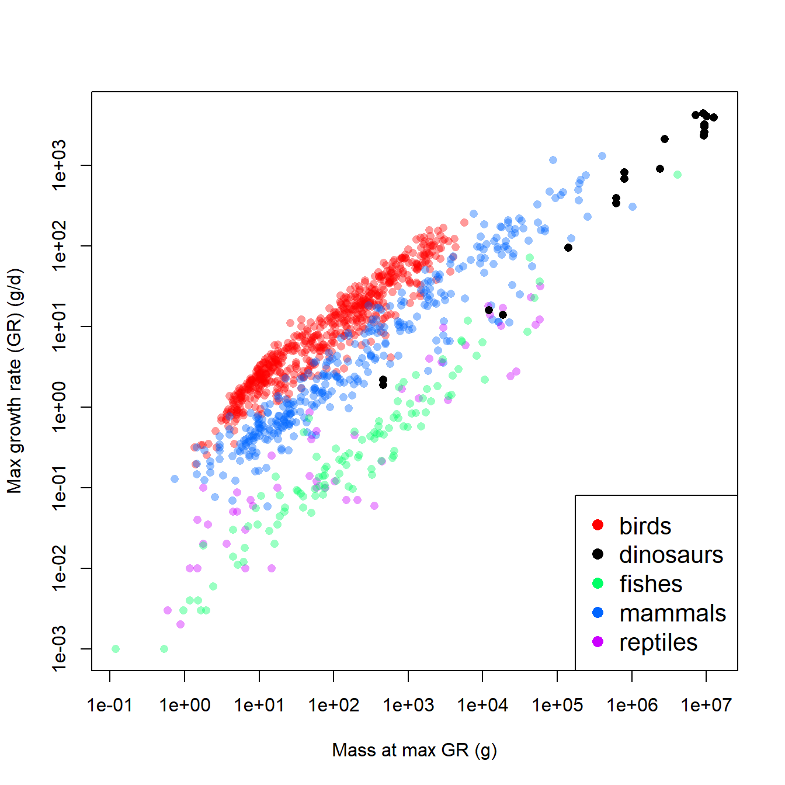
Next, use the function rda() from vegan to calculate the PCA. In this PCA we scale the variables (aka: standardize) by subtracting the mean and dividing by the SD. This has the effect of making each variable have mean = 0 and SD = 1. Scaling is not required for PCA but is highly recommended. If values are not scaled, then the PCA will be dominated by the variables with the greatest values or by the observations with extreme values.
p1 <- rda(dat3[,pc.cols], scale=TRUE)
summary(p1)##
## Call:
## rda(X = dat3[, pc.cols], scale = TRUE)
##
## Partitioning of correlations:
## Inertia Proportion
## Total 5 1
## Unconstrained 5 1
##
## Eigenvalues, and their contribution to the correlations
##
## Importance of components:
## PC1 PC2 PC3 PC4 PC5
## Eigenvalue 1.4884 1.3471 1.0867 0.9389 0.13888
## Proportion Explained 0.2977 0.2694 0.2173 0.1878 0.02778
## Cumulative Proportion 0.2977 0.5671 0.7844 0.9722 1.00000
##
## Scaling 2 for species and site scores
## * Species are scaled proportional to eigenvalues
## * Sites are unscaled: weighted dispersion equal on all dimensions
## * General scaling constant of scores: 4.196048
##
##
## Species scores
##
## PC1 PC2 PC3 PC4 PC5
## bow 0.6502 -0.3804 0.3746 1.6772 -0.0256
## brw -0.8926 -1.2116 -1.0353 0.2617 0.3410
## aud -1.2718 0.7591 1.0657 0.2616 0.3513
## mob 0.9822 1.2887 -0.8596 0.1665 0.3596
## hip 1.1999 -0.9455 0.8601 -0.5732 0.3456
##
##
## Site scores (weighted sums of species scores)
##
## PC1 PC2 PC3 PC4 PC5
## sit1 -0.4822 -0.47110 -0.51367 0.032283 0.474975
## sit2 -0.1875 0.46735 0.51711 0.369969 -0.003147
## sit3 0.7140 0.21390 -0.80651 -0.818336 -0.071516
## sit4 0.4038 -0.72892 0.44826 -0.063108 0.690554
## sit5 -0.4484 -0.47079 -0.46877 0.246659 -0.080258
## sit6 -0.1740 0.54116 0.76904 -0.090556 0.443921
## sit7 0.7314 0.13147 -0.08352 0.791550 0.556946
## sit8 0.4378 -0.68647 0.29135 -0.318361 -0.389457
## sit9 -0.6786 -0.40593 -0.49047 -0.055734 0.047201
## sit10 -0.5471 0.46826 0.39227 -0.277305 0.021265
## sit11 0.5047 0.45175 -0.68715 -1.046120 -0.554421
## sit12 0.2737 -0.76045 0.56922 -0.009404 0.423659
## sit13 -0.7074 -0.40835 -0.46360 -0.442119 0.136189
## sit14 -0.4174 0.54986 0.56501 0.390291 -0.996710
## sit15 0.7238 0.23208 -0.69268 0.086960 -0.220235
## sit16 0.4023 -0.71503 0.56602 0.622207 -0.030857
## sit17 -0.5113 -0.39390 -0.48222 1.449440 -0.874003
## sit18 -0.5161 0.65950 0.41766 -0.464633 0.546833
## sit19 0.5582 0.59672 -0.21665 0.456523 0.041643
## sit20 0.7217 -0.57541 0.37694 0.361859 0.367978
## sit21 -0.7814 -0.18490 -0.59536 -0.546239 0.624799
## sit22 -0.5743 0.86534 0.31746 -0.031015 -0.046946
## sit23 0.6501 0.30104 -0.50589 0.704037 0.450911
## sit24 0.1322 -0.48776 0.29655 -0.905271 0.829062
## sit25 -0.6016 -0.09952 -0.25379 0.285644 -0.292755
## sit26 0.1762 0.68850 0.53632 0.011641 -0.162855
## sit27 0.7698 0.39111 -0.48473 -0.523310 -0.586544
## sit28 0.9450 -0.72682 0.51129 0.189683 -0.972058
## sit29 -0.5400 -0.44113 -0.89254 0.077095 -1.008438
## sit30 -0.2476 0.41802 0.76914 0.033110 0.585923
## sit31 0.4579 0.43434 -0.42246 -0.427813 1.254583
## sit32 0.3163 -0.48116 0.14197 -0.583475 0.258704
## sit33 -0.7874 -0.22881 -0.42449 0.020886 0.036846
## sit34 -0.3562 0.67117 0.40279 0.130779 0.254196
## sit35 0.5619 0.57716 -0.36416 0.198927 -0.096652
## sit36 0.3383 -0.69771 0.27202 -0.543479 -0.917745
## sit37 -0.5503 -0.04613 -0.87845 -0.183795 0.366676
## sit38 -0.5610 0.76767 0.14607 -0.233642 0.203234
## sit39 0.5757 0.53175 -0.44112 0.176223 -0.783513
## sit40 0.1957 -0.53875 0.38645 -0.748866 0.152175
## sit41 -0.5793 -0.50413 -0.38612 0.342061 0.134688
## sit42 -0.4700 0.34255 0.60210 0.442490 0.268606
## sit43 0.4381 0.72725 -0.50710 -0.652534 -0.132495
## sit44 0.3847 -0.57265 0.44835 -0.003145 0.642012
## sit45 -0.5225 -0.50720 -0.16657 0.831065 0.048770
## sit46 -0.1615 0.68519 0.58968 0.026128 -0.556304
## sit47 0.9713 0.04069 -0.36804 1.647929 0.094091
## sit48 0.2589 -0.69440 0.08940 -0.926043 -0.419415
## sit49 -0.4445 -0.20883 -0.92458 -0.132031 0.220466
## sit50 -0.5502 0.63824 0.32205 0.014305 0.458476
## sit51 0.5413 0.65064 -0.46422 -0.868767 -0.806164
## sit52 0.3340 -0.79973 0.88265 0.412611 0.351906
## sit53 -0.8137 -0.28059 -0.41296 -0.184942 0.305652
## sit54 -0.2019 0.32853 0.67470 -0.050061 -0.030891
## sit55 0.5214 0.37534 -0.43319 -0.221992 0.717535
## sit56 0.3656 -0.62963 0.49570 -0.443295 0.124316
## sit57 -0.4750 -0.49025 -0.34624 0.481810 0.037603
## sit58 -0.2769 0.47637 0.73519 0.163663 0.314753
## sit59 0.4670 0.13039 -0.27637 0.167998 0.281708
## sit60 -0.1991 -0.86051 0.80864 -0.561143 -0.932744
## sit61 -0.7639 -0.28665 -0.42427 0.151890 -0.689890
## sit62 -0.3285 0.65774 0.99773 0.038309 -1.346359
## sit63 0.5844 0.37256 -0.46123 1.000511 0.233515The summary of the output contains most of what we need. Of greatest interest are the relative contributions of each PC. That is, how much of the overall variation is associated with each PC.
The overall variation is the sum of the variances of the original variables. The PCA was fit using centered and scaled values, so we need to scale the original data to see the variances that were used in the PCA. The scaling meant that each variable ended up with mean = 0 and variance = 1, so the total variance was equal to 5.
apply(scale(dat3[,pc.cols]), 2, var)## bow brw aud mob hip
## 1 1 1 1 1That total variance of 5 was partitioned into 5 PCs. In PCA, data are ordinated on one PC for each of the original variables. Each PC is a combination of the original variables. The summary table for the PCA shows how the total variance was split up.
- The first row,
Eigenvalue, is the variance associated with each PC. The sum of the eigenvalues equals the total variance, 5. - The
Proportion Explainedrow shows the proportion of total variance captured on each PC. PC1 captures 29.8%, PC2 captured 26.9%, and so on. For example, the proportion of variance explained by PC1, 0.2977, is equal to the eigenvalue of PC1 divided by the total variance (1.4884 / 5). - The
Cumulative Proportionrow is the running total of proportion of variance explained, starting with PC1. The rule of thumb for PCA is that you should present and interpret enough PCs to capture \(\ge\) 80% of the variation. In this example, it takes 3 PCs to get up to about 80% of the variation explained). Two PCs is easier to deal with, but sometimes you need 3.
summary(p1)$cont$importance## Importance of components:
## PC1 PC2 PC3 PC4 PC5
## Eigenvalue 1.4884 1.3471 1.0867 0.9389 0.13888
## Proportion Explained 0.2977 0.2694 0.2173 0.1878 0.02778
## Cumulative Proportion 0.2977 0.5671 0.7844 0.9722 1.00000An alternative strategy for deciding how many PCs to interpret is to look at a screeplot, which shows the relative contributions of each PC to the overall variance. The variance is expressed as “Inertia”–the eigenvalues of the PCs. The proportion explained by each axis (seen in the table above), is simply the eigenvalues of the axes divided by the total of all eigenvalues. Some people prefer to present a screeplot that shows proportion of variance explained rather than the eigenvalues.
par(mfrow=c(1,2))
screeplot(p1, main="Eigenvalues")
# alternative version with proportion of variance explained
# instead of eigenvalues (variances)
prx <- 100*summary(p1)$cont$importance[2,]
barplot(prx, ylim=c(0, 30),
main="%Variance",
ylab="Proportion of variance explained")
The loadings of the variables express how much each variable is associated with each PC. These values have two interpretations:
- First, they are the correlations between the variables and the PCs.
- Second, they are the coordinates for the biplot vectors (see below), which help us see the relationships between the ordination and the variables.
- Note: the biplot vectors implied by these coordinates are sometimes rescaled to more faithfully represent the relationships between variables. See Legendre and Legendre (2012) for a thorough explanation.
scores(p1, choices = 1:4, display = "species", scaling = 0)## PC1 PC2 PC3 PC4
## bow 0.2840062 -0.1746469 0.1914720 0.92240824
## brw -0.3898723 -0.5563058 -0.5292561 0.14392406
## aud -0.5555135 0.3485255 0.5448121 0.14388004
## mob 0.4290023 0.5917029 -0.4394228 0.09156649
## hip 0.5241200 -0.4340967 0.4396748 -0.31521900
## attr(,"const")
## [1] 4.196048PC1 is most strongly correlated with aud (r = -0.55) and hip (r = 0.52). PC2 is most strongly correlated with mob (r = 0.59) and brw (r = -0.55). Ideally, each PC would have a few variables strongly correlated with it (r > 0.7), but that isn’t the case here. Interestingly, most of the variables are moderately correlated with first three axes. This suggests that none of the variables is strongly driving any of the PCs. We can check this with a biplot.
An ordination biplot is probably the most important tool for interpreting the relationships in the data captured by the ordination. It is called a biplot because it presents two kinds of data: similarity between the samples indicated by proximity in the ordination space; and relationships between some set of quantitative variables and the ordination axes. The samples are plotted as points; the variables are plotted as vectors radiating from the origin.
par(mfrow=c(1,1))
biplot(p1)The biplot shows the points (by row name/number) and the five numeric variables that went into the PCA. Each vector shows the projection of a variable into the ordination space.
- The direction of a vector shows the direction (in ordination space) in which a variable increases. For example, samples in the upper left have increased
aud; samples in the upper right have increasedmob, and so on. A variable decreases in the direction opposite its vector: samples in the lower right have decreasedaud.- Compare the variable loadings with the biplot arrows. Do these values make sense?
- Relative angles of vectors reflect the correlation between the underlying variables.
- Variables whose vectors point in the same direction are positively correlated with each other; the smaller the angle between two vectors, the stronger the correlation (r approaching 1).
- Vectors perpendicular to each other are uncorrelated (r close to 0).
- Vectors pointing in opposite directions are negatively correlated with each other (r approaching -1).
- Correlation coefficients cannot be inferred directly from angles because of how the coordinates on the plot are scaled, but the angles do give a rough idea.
- The length of a vector indicates the strength of the correlation with the ordination space. Longer vectors indicate stronger correlations (|r |).
- Each variable vectors represents an axis of the original coordinate system.
- Shorter vectors have most of their length off the plane of the biplot.
- Longer vectors have more of their length near the plane of the biplot.
- The biplot is really a plane within the original data coordinate system defined by the PCs.
Because it took 3 PCs to get up to about 80% of the variation, we should present and interpret the first 3 PCs. We can plot other variables with the biplot() command.
par(mfrow=c(2,2))
biplot(p1, choices=c(1,2))
biplot(p1, choices=c(1,3))
biplot(p1, choices=c(2,3))
Even better, we can make a 3-d plot using the rgl package. Note that the code block below was not run to make this page; try running it on your machine. The plots made by plot3d() are cool because you can rotate them with the mouse. Exporting rgl figures to static image formats like .jpg can be tricky because you must specify the rotation angles, which can pretty much only be done by trial and error.
library(rgl)
par(mfrow=c(1,1))
px <- scores(p1, choices=1:3)$sites
plot3d(px[,1], px[,2], px[,3],
xlab="PC1", ylab="PC2", zlab="PC3")We can add more information to the biplots to help us make sense of the data. Let’s color-code the diets.
diets <- sort(unique(dat3$diet))
cols <- rainbow(length(diets))
use.cols <- cols[match(dat3$diet, diets)]
par(mfrow=c(1,1))
px <- scores(p1, choices=1:3)$sites
vx <- scores(p1, choices=1:3)$species
plot3d(px[,1], px[,2], px[,3],
xlab="PC1", ylab="PC2", zlab="PC3",
col=use.cols, size=50)
for(i in 1:nrow(vx)){
segments3d(c(0, vx[i,1]), c(0, vx[i,2]), c(0, vx[i,3]), col="red")
text3d(vx[i,1], vx[i,2], vx[i,3], rownames(vx)[i], col="red")
}The biplot() command in vegan isn’t very flexible, so we if we want a nicer-looking plot we will need to construct it manually.
px <- scores(p1, choices=1:3)$sites
vx <- scores(p1, choices=1:3)$species
diets <- sort(unique(dat3$diet))
cols <- rainbow(length(diets))
use.cols <- cols[match(dat3$diet, diets)]
par(mfrow=c(2,2))
plot(px[,1], px[,2], pch=16, cex=1.4, col=use.cols,
xlab="PC1", ylab="PC2", xlim=c(-1.5, 1.5), ylim=c(-1.5, 1.5))
segments(0, 0, vx[,1], vx[,2], col="red")
text(vx[,1], vx[,2], rownames(vx), col="red")
plot(px[,1], px[,3], pch=16, cex=1.4, col=use.cols,
xlab="PC1", ylab="PC3", xlim=c(-1.5, 1.5), ylim=c(-1.5, 1.5))
segments(0, 0, vx[,1], vx[,3], col="red")
text(vx[,1], vx[,3], rownames(vx), col="red")
plot(px[,2], px[,3], pch=16, cex=1.4, col=use.cols,
xlab="PC2", ylab="PC3", xlim=c(-1.5, 1.5), ylim=c(-1.5, 1.5))
segments(0, 0, vx[,2], vx[,3], col="red")
text(vx[,2], vx[,3], rownames(vx), col="red")
12.5.1.4 Application of PCA: PC regression
Because PCs capture information about multiple variables at once, they can be used to represent those variables in other statistical methods. For example, a PC that represents many measurements of body parts or tree species composition or gene expression can be used as a predictor variable in a logistic regression or as a response variable. This practice is sometimes called PC regression. The example below uses the iris dataset to illustrate using principal components of flower morphology to predict species identity.
library(vegan)
# grab numeric variables
dat <- iris[,1:4]
# standardize each variable
dat <- apply(dat, 2, scale)
# fit PCA with vegan::rda()
p1 <- rda(dat)
# examine output
summary(p1)##
## Call:
## rda(X = dat)
##
## Partitioning of variance:
## Inertia Proportion
## Total 4 1
## Unconstrained 4 1
##
## Eigenvalues, and their contribution to the variance
##
## Importance of components:
## PC1 PC2 PC3 PC4
## Eigenvalue 2.9185 0.9140 0.14676 0.020715
## Proportion Explained 0.7296 0.2285 0.03669 0.005179
## Cumulative Proportion 0.7296 0.9581 0.99482 1.000000
##
## Scaling 2 for species and site scores
## * Species are scaled proportional to eigenvalues
## * Sites are unscaled: weighted dispersion equal on all dimensions
## * General scaling constant of scores: 4.940963
##
##
## Species scores
##
## PC1 PC2 PC3 PC4
## Sepal.Length 2.199 -0.89142 0.6810 0.09290
## Sepal.Width -1.137 -2.18073 -0.2313 -0.04392
## Petal.Length 2.450 -0.05785 -0.1345 -0.28497
## Petal.Width 2.384 -0.15811 -0.6003 0.18617
##
##
## Site scores (weighted sums of species scores)
##
## PC1 PC2 PC3 PC4
## sit1 -0.534807 -0.202559 0.134486 0.067744
## sit2 -0.491417 0.284467 0.247065 0.288729
## sit3 -0.558311 0.144276 -0.046548 0.079541
## sit4 -0.542997 0.252085 -0.096137 -0.184874
## sit5 -0.564359 -0.272948 -0.016574 -0.100692
## sit6 -0.490158 -0.628394 -0.028400 0.018523
## sit7 -0.577155 -0.020105 -0.353282 -0.103082
## sit8 -0.527285 -0.094163 0.093405 -0.068988
## sit9 -0.551323 0.470639 -0.152779 -0.075287
## sit10 -0.515827 0.197911 0.267239 -0.111838
## sit11 -0.511572 -0.440410 0.282946 0.046898
## sit12 -0.549314 -0.056156 -0.098737 -0.374156
## sit13 -0.523885 0.307482 0.243171 0.006797
## sit14 -0.621804 0.405731 -0.190395 -0.053861
## sit15 -0.519231 -0.784896 0.498009 0.545836
## sit16 -0.534220 -1.133542 -0.032147 0.141647
## sit17 -0.521320 -0.626044 0.005628 0.529258
## sit18 -0.517249 -0.206277 0.046563 0.260934
## sit19 -0.448346 -0.592881 0.394218 0.171253
## sit20 -0.553384 -0.475923 -0.139672 -0.105832
## sit21 -0.452066 -0.172526 0.443660 0.030613
## sit22 -0.521184 -0.389955 -0.168353 0.167052
## sit23 -0.655159 -0.193409 -0.349815 0.055075
## sit24 -0.429477 -0.036103 -0.036320 0.423650
## sit25 -0.525943 -0.057918 -0.124258 -0.757207
## sit26 -0.460927 0.263995 0.321868 0.122104
## sit27 -0.484377 -0.102187 -0.090949 0.189708
## sit28 -0.512107 -0.222443 0.217797 0.028802
## sit29 -0.505256 -0.132170 0.285546 0.236180
## sit30 -0.534939 0.142514 -0.072069 -0.303510
## sit31 -0.505388 0.212903 0.078991 -0.135074
## sit32 -0.432529 -0.178788 0.284827 0.672360
## sit33 -0.617518 -0.756842 -0.049736 -0.642551
## sit34 -0.577663 -0.907551 0.087057 -0.135146
## sit35 -0.498269 0.194193 0.179315 0.081352
## sit36 -0.521372 0.086972 0.237411 0.473451
## sit37 -0.482959 -0.279160 0.510263 0.550396
## sit38 -0.596827 -0.249932 -0.020468 -0.382624
## sit39 -0.573755 0.381540 -0.203515 -0.027297
## sit40 -0.512375 -0.113460 0.185222 0.019754
## sit41 -0.539949 -0.186392 -0.036748 0.299875
## sit42 -0.438794 0.986328 0.215078 0.812492
## sit43 -0.603039 0.202168 -0.322000 -0.186685
## sit44 -0.463903 -0.199310 -0.326039 0.496394
## sit45 -0.504665 -0.481991 -0.261624 -0.423377
## sit46 -0.488768 0.300046 0.067324 0.393177
## sit47 -0.563153 -0.472792 -0.060256 -0.426705
## sit48 -0.565430 0.162986 -0.146873 -0.136884
## sit49 -0.526482 -0.421113 0.191129 -0.041844
## sit50 -0.520433 -0.003889 0.161154 0.138390
## sit51 0.260185 -0.364152 0.720933 0.097640
## sit52 0.172705 -0.250912 0.099119 0.013745
## sit53 0.293056 -0.260062 0.583421 0.026414
## sit54 0.096227 0.740313 0.024328 0.184351
## sit55 0.253972 0.087948 0.419400 0.293579
## sit56 0.091788 0.250350 -0.130785 -0.675053
## sit57 0.176292 -0.326194 -0.156879 -0.216869
## sit58 -0.115081 0.781677 -0.262499 -0.113579
## sit59 0.219123 -0.013599 0.627822 -0.083753
## sit60 0.002698 0.436329 -0.567511 -0.079777
## sit61 -0.026023 1.119949 0.049275 0.038572
## sit62 0.104069 0.026709 -0.215962 0.112474
## sit63 0.132741 0.744668 0.806428 0.128185
## sit64 0.169924 0.078582 0.072304 -0.461957
## sit65 -0.007877 0.185248 -0.205282 0.305664
## sit66 0.206727 -0.214812 0.530244 0.294159
## sit67 0.082712 0.082838 -0.516935 -0.536803
## sit68 0.037503 0.334244 0.318073 -0.575452
## sit69 0.289305 0.684545 0.507911 0.633200
## sit70 0.038945 0.549667 0.182014 -0.144991
## sit71 0.174203 -0.167343 -0.649260 -0.233447
## sit72 0.112475 0.176098 0.279019 0.318333
## sit73 0.291450 0.393839 0.387972 -0.027875
## sit74 0.149449 0.175705 0.307394 -0.768643
## sit75 0.165933 0.026758 0.469708 0.121814
## sit76 0.206459 -0.105828 0.497670 0.285111
## sit77 0.296723 0.032600 0.765762 0.111247
## sit78 0.320786 -0.139805 0.274675 0.187320
## sit79 0.156992 0.095336 -0.090423 -0.102141
## sit80 -0.009507 0.446752 0.336540 0.181602
## sit81 0.030887 0.659238 0.157947 -0.026355
## sit82 0.005538 0.663544 0.254377 -0.091862
## sit83 0.057039 0.327982 0.159240 0.066295
## sit84 0.250577 0.267465 -0.110903 -0.515666
## sit85 0.052892 0.121433 -0.700570 -0.714287
## sit86 0.101341 -0.356814 -0.474560 -0.307421
## sit87 0.247656 -0.220292 0.416800 0.104297
## sit88 0.246665 0.583585 0.724840 0.383552
## sit89 0.016433 0.092625 -0.307060 -0.412448
## sit90 0.066943 0.560940 -0.094157 0.024963
## sit91 0.065904 0.472623 -0.099504 -0.758656
## sit92 0.147492 -0.010517 0.021569 -0.413967
## sit93 0.079471 0.417081 0.209976 0.018305
## sit94 -0.085529 0.852066 -0.111439 0.054857
## sit95 0.068149 0.361096 -0.137839 -0.301050
## sit96 0.021575 0.076458 -0.135826 -0.644580
## sit97 0.053775 0.162426 -0.164507 -0.371696
## sit98 0.136114 0.065353 0.286073 -0.055670
## sit99 -0.105716 0.651440 -0.200510 0.560453
## sit100 0.060627 0.252700 -0.096757 -0.164318
## sit101 0.435593 -0.367295 -1.058781 -0.138048
## sit102 0.273433 0.294905 -0.558308 -0.113580
## sit103 0.520772 -0.237154 0.213687 0.165894
## sit104 0.340090 0.019828 -0.172318 -0.660867
## sit105 0.441082 -0.124501 -0.416633 -0.045684
## sit106 0.649852 -0.337752 0.613226 -0.284182
## sit107 0.086671 0.658913 -1.039290 -0.373148
## sit108 0.543719 -0.177257 0.686307 -0.667233
## sit109 0.473877 0.300209 0.414909 -0.242490
## sit110 0.533644 -0.810616 -0.418659 0.293865
## sit111 0.322149 -0.292325 -0.299723 0.302334
## sit112 0.378471 0.177947 -0.024417 0.163504
## sit113 0.444881 -0.176912 -0.027737 0.410403
## sit114 0.297575 0.490444 -0.611056 0.277939
## sit115 0.346583 0.186627 -1.057168 0.772676
## sit116 0.375495 -0.285358 -0.672325 0.537795
## sit117 0.347477 -0.107866 -0.039419 -0.435393
## sit118 0.572975 -1.078844 0.134671 -0.767485
## sit119 0.781818 -0.007503 0.740646 0.126664
## sit120 0.298437 0.720202 0.281741 -0.182703
## sit121 0.481205 -0.384193 -0.247266 0.470770
## sit122 0.230949 0.241270 -0.872095 0.077799
## sit123 0.684278 -0.174546 0.902945 -0.356926
## sit124 0.314842 0.203312 0.005717 0.392307
## sit125 0.401627 -0.427849 -0.314296 -0.172788
## sit126 0.461512 -0.425256 0.442283 -0.612005
## sit127 0.277500 0.133510 -0.136837 0.351555
## sit128 0.241097 -0.027152 -0.355646 -0.024258
## sit129 0.422317 0.079062 -0.285028 0.087139
## sit130 0.440099 -0.237272 0.753629 -0.583630
## sit131 0.575248 -0.109411 0.766458 -0.050239
## sit132 0.544307 -1.108240 0.519674 -0.593330
## sit133 0.439876 0.075343 -0.372952 0.280329
## sit134 0.263105 0.123606 0.193230 -0.522324
## sit135 0.283963 0.342354 0.173469 -1.372029
## sit136 0.660927 -0.361549 0.571731 0.829359
## sit137 0.372231 -0.450913 -0.996072 0.099803
## sit138 0.317926 -0.178255 -0.190479 -0.603829
## sit139 0.218397 -0.007268 -0.438957 0.014683
## sit140 0.437359 -0.285308 0.013345 0.547135
## sit141 0.475796 -0.259044 -0.451074 0.693853
## sit142 0.449105 -0.290983 -0.136981 1.316566
## sit143 0.273433 0.294905 -0.558308 -0.113580
## sit144 0.481876 -0.366071 -0.356097 0.126660
## sit145 0.471861 -0.442722 -0.665990 0.599972
## sit146 0.441718 -0.163290 -0.269880 1.091092
## sit147 0.369474 0.378378 0.027771 0.617201
## sit148 0.359223 -0.113540 -0.189745 0.334038
## sit149 0.324183 -0.426723 -0.982952 0.073239
## sit150 0.226858 0.010267 -0.556295 -0.457110# make some colors to label species
use.col <- rainbow(3)[match(iris$Species,levels(iris$Species))]
# extract scores of samples (px) and biplot vectors (vx)
px <- scores(p1, display="sites")
vx <- scores(p1,display="species")
# make a plot of the flowers in PCA space
plot(px[,1], px[,2], col=use.col, pch=16,
xlim=c(-3, 3), ylim=c(-3, 3),
xlab="PC1", ylab="PC2")
segments(0, 0, vx[,1], vx[,2], col="red")
text(vx[,1], vx[,2], rownames(vx), col="red")
legend("topleft", legend=levels(iris$Species),
pch=16, col=rainbow(3))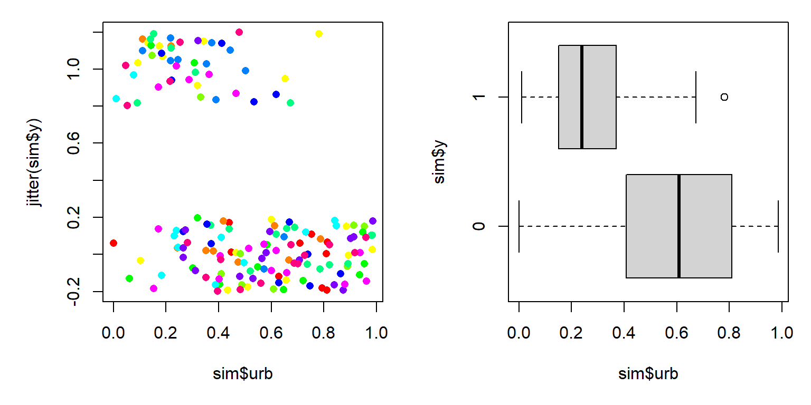
The ordination reveals that 73% of variation is explained by PC1. The figure shows that the species fall out very cleanly along PC1, with is associated with petal morphology. Let’s use PC1 as a predictor for species in a logistic regression.
dat2 <- data.frame(y=iris$Species, pc1=px[,1])
dat2$z <- ifelse(dat2$y == "virginica", 1, 0)
mod1 <- glm(z~pc1, data=dat2, family=binomial)
summary(mod1)##
## Call:
## glm(formula = z ~ pc1, family = binomial, data = dat2)
##
## Deviance Residuals:
## Min 1Q Median 3Q Max
## -1.83252 -0.10909 -0.00016 0.10887 2.83405
##
## Coefficients:
## Estimate Std. Error z value Pr(>|z|)
## (Intercept) -6.023 1.393 -4.323 1.54e-05 ***
## pc1 23.366 5.162 4.526 6.00e-06 ***
## ---
## Signif. codes: 0 '***' 0.001 '**' 0.01 '*' 0.05 '.' 0.1 ' ' 1
##
## (Dispersion parameter for binomial family taken to be 1)
##
## Null deviance: 190.954 on 149 degrees of freedom
## Residual deviance: 50.108 on 148 degrees of freedom
## AIC: 54.108
##
## Number of Fisher Scoring iterations: 9The logistic regression results suggest that for every unit increase in PC1, the odds ratio of a flower being Iris virginica increases by 23. That’s a very strong signal. Just for fun, below are the model predictions of probability of being I. virginica and the ROC curve. Both confirm visually what the coefficients table above suggested, that PC1 is a very reliable predictor of Iris species (at least in this dataset).
n <- 50
prx <- seq(min(dat2$pc1), max(dat2$pc1), length=n)
dx <- data.frame(pc1=prx)
pred <- predict(mod1, newdata=data.frame(dx),
type="link", se.fit=TRUE)
mn <- plogis(pred$fit)
ll <- plogis(qnorm(0.025, pred$fit, pred$se.fit))
uu <- plogis(qnorm(0.975, pred$fit, pred$se.fit))
par(mfrow=c(1,1), mar=c(5.1, 5.1, 1.1, 1.1),
lend=1, las=1, cex.axis=1.3, cex.lab=1.3,
bty="n")
plot(prx, mn, type="n", xlab="PC1",
ylab=expression(P(italic(virginica))),
ylim=c(-0.1,1.1))
points(prx, ll, type="l", lty=2)
points(prx, uu, type="l", lty=2)
points(prx, mn, type="l", lwd=2)
points(dat2$pc1, jitter(dat2$z, amount=0.05), xpd=NA)
library(pROC)## Type 'citation("pROC")' for a citation.##
## Attaching package: 'pROC'## The following objects are masked from 'package:stats':
##
## cov, smooth, varp1 <- predict(mod1, type="response")
roc1 <- roc(dat2$z ~ p1, plot = TRUE, print.auc = TRUE)## Setting levels: control = 0, case = 1## Setting direction: controls < cases
roc1##
## Call:
## roc.formula(formula = dat2$z ~ p1, plot = TRUE, print.auc = TRUE)
##
## Data: p1 in 100 controls (dat2$z 0) < 50 cases (dat2$z 1).
## Area under the curve: 0.9804Going the other way, modeling PC scores in response to predictor variables, is tricky but it can be done. Usually this is only acceptable when there is a clear relationship between the modeled PC and several of the original variables that went into the PCA. Treating a PC as a dependent variable is an elegant way to get around the problem of having multiple collinear response variables. Conversely, treating a PC as a predictor variable is a way of dealing with multiple collinear predictor variables. Axes from other ordination techniques can be used in this manner, but require careful biological and statistical justification as well as very cautious interpretation.
12.5.2 NMDS and other ordination methods
PCA and many related techniques are based on linear algebra and eigenvalues. This is fine for datasets where variables are mostly linearly related to each other, or can be transformed to be linearly related. Most of the eigenvalue-based techniques also require data to be (mostly) multivariate normal distributed.
If relationships between variables are non-linear, or if the many other assumptions of eigenvalue-based ordination cannot be met, then the next best option is often a non-parametric ordination technique called nonmetric multidimensional scaling (NMDS or NMS). Unlike PCA, which solves linear algebra problems to extract synthetic gradients (“principal components”), NMDS works by trying iteratively to arrange the samples into a reduced dimensional space that preserves the rank order of the distance matrix.
12.5.2.1 NMDS simple explanation
Let’s start with a simple example. Download the dataset state_caps.csv, put it in your R home directory, and load it into R. This dataset contains the latitudes and longitudes of the state capitals of the US. For simplicity, we will use only the lower 48 states.
library(vegan)
in.name <- "state_caps.csv"
dat <- read.csv(in.name, header=TRUE)
dat <- dat[which(!dat$state %in% c("Alaska", "Hawaii")),]
# set rownames so the city names will carry through to the
# distance matrix
rownames(dat) <- dat$cap
dat <- dat[,c("long", "lat")]Use function vegdist() in package vegan to calculate Euclidean distances between the cities97. Then print the object d1 to the console and take a look (not shown).
d1 <- vegdist(dat[,c("long", "lat")], method="euclidean")The distance matrix gives the distance between each pair of cities, identified by row labels.
If you plot latitude vs. longitude, you will get a reasonable map of the continental US (CONUS).
plot(dat$long, dat$lat)Wouldn’t it be neat if we could recover the actual arrangement of capitals shown above just using their distance matrix? It turns out, we can, with NMDS. The main function for NMDS is metaMDS() in package vegan. NMDS involves random sampling, so set the random number seed for reproducibility.
set.seed(123)
n1 <- metaMDS(dat, distance="euclidean")## 'comm' has negative data: 'autotransform', 'noshare' and 'wascores' set to FALSE## Run 0 stress 0
## Run 1 stress 0.02824041
## Run 2 stress 9.688201e-05
## ... Procrustes: rmse 0.0003258308 max resid 0.0008680344
## ... Similar to previous best
## Run 3 stress 9.741634e-05
## ... Procrustes: rmse 0.0003391501 max resid 0.0009861631
## ... Similar to previous best
## Run 4 stress 9.614493e-05
## ... Procrustes: rmse 0.0003316108 max resid 0.00101616
## ... Similar to previous best
## Run 5 stress 9.839223e-05
## ... Procrustes: rmse 0.0003366584 max resid 0.001019179
## ... Similar to previous best
## Run 6 stress 9.938774e-05
## ... Procrustes: rmse 0.0003421181 max resid 0.001056077
## ... Similar to previous best
## Run 7 stress 9.747501e-05
## ... Procrustes: rmse 0.0003420786 max resid 0.001042044
## ... Similar to previous best
## Run 8 stress 9.688222e-05
## ... Procrustes: rmse 0.0003407193 max resid 0.001040716
## ... Similar to previous best
## Run 9 stress 9.042907e-05
## ... Procrustes: rmse 0.0003277819 max resid 0.0009954318
## ... Similar to previous best
## Run 10 stress 9.585724e-05
## ... Procrustes: rmse 0.0003388215 max resid 0.001045013
## ... Similar to previous best
## Run 11 stress 9.623688e-05
## ... Procrustes: rmse 0.0003381601 max resid 0.001029097
## ... Similar to previous best
## Run 12 stress 0.04810304
## Run 13 stress 9.271431e-05
## ... Procrustes: rmse 0.0003274582 max resid 0.000996862
## ... Similar to previous best
## Run 14 stress 9.821812e-05
## ... Procrustes: rmse 0.0003434694 max resid 0.001046526
## ... Similar to previous best
## Run 15 stress 9.886879e-05
## ... Procrustes: rmse 0.000344009 max resid 0.001069766
## ... Similar to previous best
## Run 16 stress 9.538052e-05
## ... Procrustes: rmse 0.0003364742 max resid 0.001031398
## ... Similar to previous best
## Run 17 stress 0.02824038
## Run 18 stress 9.633286e-05
## ... Procrustes: rmse 0.0003317048 max resid 0.000937519
## ... Similar to previous best
## Run 19 stress 0.02824036
## Run 20 stress 9.744164e-05
## ... Procrustes: rmse 0.0003414834 max resid 0.001047844
## ... Similar to previous best
## *** Solution reached## Warning in metaMDS(dat, distance = "euclidean"): stress is (nearly) zero: you
## may have insufficient dataplot(scores(n1, display="sites"))Notice anything odd? The arrangement of the cities, or relative positions, are mostly correct. However, the cities are flipped east to west! This is because NMDS only considers relative position, not absolute position. NMDS positions are arbitrary, so we can rotate or flip the axes to make better sense of them. We’ll flip the first axis (NMDS1) by multiplying it by -1.
sn <- scores(n1, display="sites")
sn[,1] <- -1*sn[,1]
plot(sn)
Much better. The coordinates aren’t quite the same as the original data, but the relative positions of the cities are correct. We can confirm this with a stress plot.
stressplot(n1)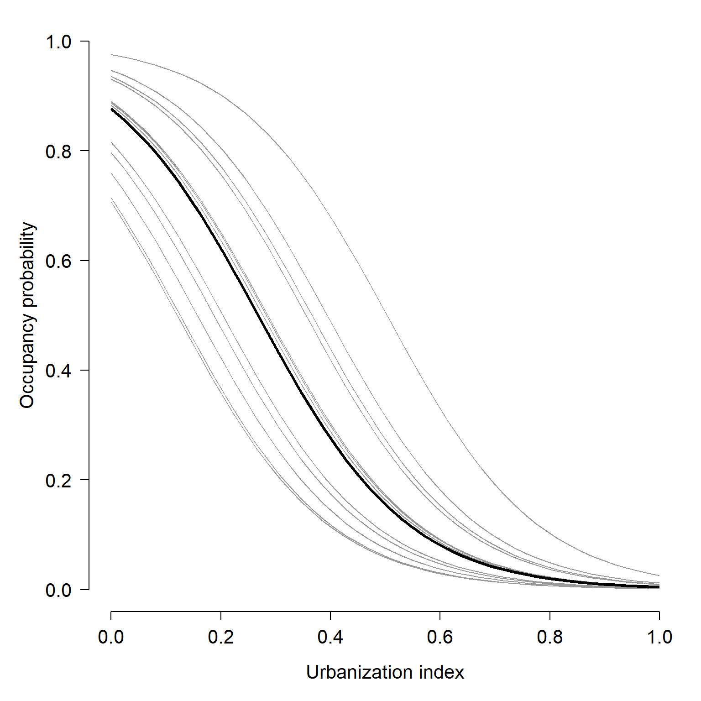
This chart shows that the distances between points in the NMDS space (Ordination Distance) are nearly identical to the distances between points in the original data space (Observed Dissimilarity). A good NMDS fit will have nearly all of the points on the red line of equality.
12.5.2.2 NMDS more complicated explanation
Like PCA, NMDS is a technique for reducing the dimensionality of data. The general approach of NMDS is to start with a cloud of n samples (points) in p dimensions (variables), and try to position the points into <p dimensions in a way that preserves the relative distances between the points. Consider the example below, which shows a 3-d dataset with variables X, Y, and Z.
set.seed(123)
n <- 36
x <- runif(n, 1, 10)
y <- runif(n, 1, 3)
z <- runif(n, 1, 10)The code below was not run for this tutorial, but a screenshot of the result is shown below.
library(rgl)
par(mfrow=c(1,1))
plot3d(x, y, z,
xlab="X", ylab="Y", zlab="Z",
xlim=c(0,10), ylim=c(0,10), zlim=c(0,10))Or more prosaically:
par(mfrow=c(2,2))
plot(x, y, xlim=c(0, 10), ylim=c(0, 10))
plot(x, z, xlim=c(0, 10), ylim=c(0, 10))
plot(y,z, xlim=c(0, 10), ylim=c(0, 10))The scatterplots suggest that most of the variation is tied up in X and Z, with very little in Y. If we wanted to present the data in two dimensions, we could use NMDS to arrange the points in a 2-d space that preserves the relative distances. Data can be passed directly to metaMDS(), in which case it will calculate the distance matrix for you. Alternatively, you can supply a distance matrix. The function will figure out what to do based on what your input.
As always, set the random number seed for reproducibility.
set.seed(42)
dat <- cbind(x,y,z)
n2 <- metaMDS(dat)## Wisconsin double standardization
## Run 0 stress 0.02846602
## Run 1 stress 0.02846602
## ... Procrustes: rmse 4.316137e-06 max resid 1.726271e-05
## ... Similar to previous best
## Run 2 stress 0.02846602
## ... Procrustes: rmse 1.118155e-05 max resid 4.018889e-05
## ... Similar to previous best
## Run 3 stress 0.02846602
## ... New best solution
## ... Procrustes: rmse 6.792159e-06 max resid 2.56478e-05
## ... Similar to previous best
## Run 4 stress 0.02846602
## ... Procrustes: rmse 7.699264e-06 max resid 2.638313e-05
## ... Similar to previous best
## Run 5 stress 0.02846602
## ... Procrustes: rmse 9.363497e-06 max resid 3.897864e-05
## ... Similar to previous best
## Run 6 stress 0.02846602
## ... New best solution
## ... Procrustes: rmse 2.322942e-06 max resid 7.365495e-06
## ... Similar to previous best
## Run 7 stress 0.02846602
## ... Procrustes: rmse 3.750166e-06 max resid 1.250864e-05
## ... Similar to previous best
## Run 8 stress 0.02846602
## ... Procrustes: rmse 6.108855e-06 max resid 2.128185e-05
## ... Similar to previous best
## Run 9 stress 0.02846602
## ... Procrustes: rmse 4.354076e-06 max resid 1.548638e-05
## ... Similar to previous best
## Run 10 stress 0.02846602
## ... Procrustes: rmse 1.755597e-06 max resid 5.736735e-06
## ... Similar to previous best
## Run 11 stress 0.02846602
## ... Procrustes: rmse 5.436306e-06 max resid 2.010142e-05
## ... Similar to previous best
## Run 12 stress 0.02846602
## ... Procrustes: rmse 1.012847e-06 max resid 3.324696e-06
## ... Similar to previous best
## Run 13 stress 0.02846602
## ... Procrustes: rmse 4.858257e-06 max resid 1.845511e-05
## ... Similar to previous best
## Run 14 stress 0.11564
## Run 15 stress 0.11564
## Run 16 stress 0.02846602
## ... Procrustes: rmse 3.74378e-06 max resid 1.643431e-05
## ... Similar to previous best
## Run 17 stress 0.02846602
## ... Procrustes: rmse 3.719871e-06 max resid 1.260728e-05
## ... Similar to previous best
## Run 18 stress 0.02846602
## ... Procrustes: rmse 5.596345e-06 max resid 2.38461e-05
## ... Similar to previous best
## Run 19 stress 0.11564
## Run 20 stress 0.11564
## *** Solution reachedn2##
## Call:
## metaMDS(comm = dat)
##
## global Multidimensional Scaling using monoMDS
##
## Data: wisconsin(dat)
## Distance: bray
##
## Dimensions: 2
## Stress: 0.02846602
## Stress type 1, weak ties
## Two convergent solutions found after 20 tries
## Scaling: centring, PC rotation, halfchange scaling
## Species: expanded scores based on 'wisconsin(dat)'The output tells us a lot about the fit. We got a 2-d fit (the default), used the Bray-Curtis distance metric (the default), and variables were centered, scaled, and rotated (also default). The rotation referred to here means that the final arrangement of points was rotated so that NMDS axis 1 captured as much variation as possible (aka: “varimax” rotation; McCune et al. (2002)).
The stress expresses how well the NMDS represented the rank order of the distance matrix. Lower stress indicates a more faithful representation. Stress increases as distances between samples are increased or decreased relative to the same distances in the original, full-dimensional space. If you picture the full-dimensional distances as ropes connecting the samples, and the amount of stretching or coiling of the ropes that happens as the samples are squashed into lower-dimensional space as the stress, then you pretty much have the idea.
There is no hard and fast rule, but in practice stress values should be >0 and <0.2. Some authors suggest that NMDS fits with stress \(\ge\) 0.2 are suspect and should not be interpreted; other authors use 0.1 as the cutoff. Some authors and software packages scale stress by 100, so the cutoff becomes 20 or 10 instead of 0.2 or 0.1 (McCune et al. 2002). Like P-values, stress values are a heuristic for inference and so you should not get too hung up on them. The stress plot and the screeplot are arguably more meaningful evaluations of your NMDS fit.
The stressplot below shows that the NMDS did a very good job representing the distance matrix in the reduced space, because the points are clustered near the line and the R2 values very high.
par(mfrow=c(1,1))
stressplot(n2)
The screeplot shows how the stress of the ordination changes as more dimensions are added. An NMDS ordination with the same number of dimensions as the original data would have stress 0. Generally, adding dimensions decreases stress, but there is usually a point of diminishing returns.
For the example below, I added a few more dimensions to the dataset dat with no information so that a better screeplot could be constructed. You don’t need to do this to your own data—the only reason it’s being done here is because our dataset only had 3 dimensions to start with. With your data, you should fit NMDS ordinations with more dimensions than you think you need, to see how stress decreases with dimensionality.
# extra dimensions with random numbers (no information)
ext <- matrix(runif(n*1, 0, 0.1), nrow=n, ncol=2)
# combine with original data
dat2 <- cbind(dat, ext)
# fit NMDS ordinations in a loop
# for each element of nlist, k = number of dimensions
nlist <- vector("list", ncol(dat2))
for(i in 1:length(nlist)){
nlist[[i]] <- metaMDS(dat2, distance="euclidean", k=i)
}
# extract stress values for each NMDS fit
strs <- sapply(nlist, function(x){x$stress})# fancy plot
par(mfrow=c(1,1), cex.lab=1.2, cex.axis=1.2)
plot(1:length(nlist), strs, type="l", lwd=3,
xlab="Dimensions in NMDS",
ylab="Stress")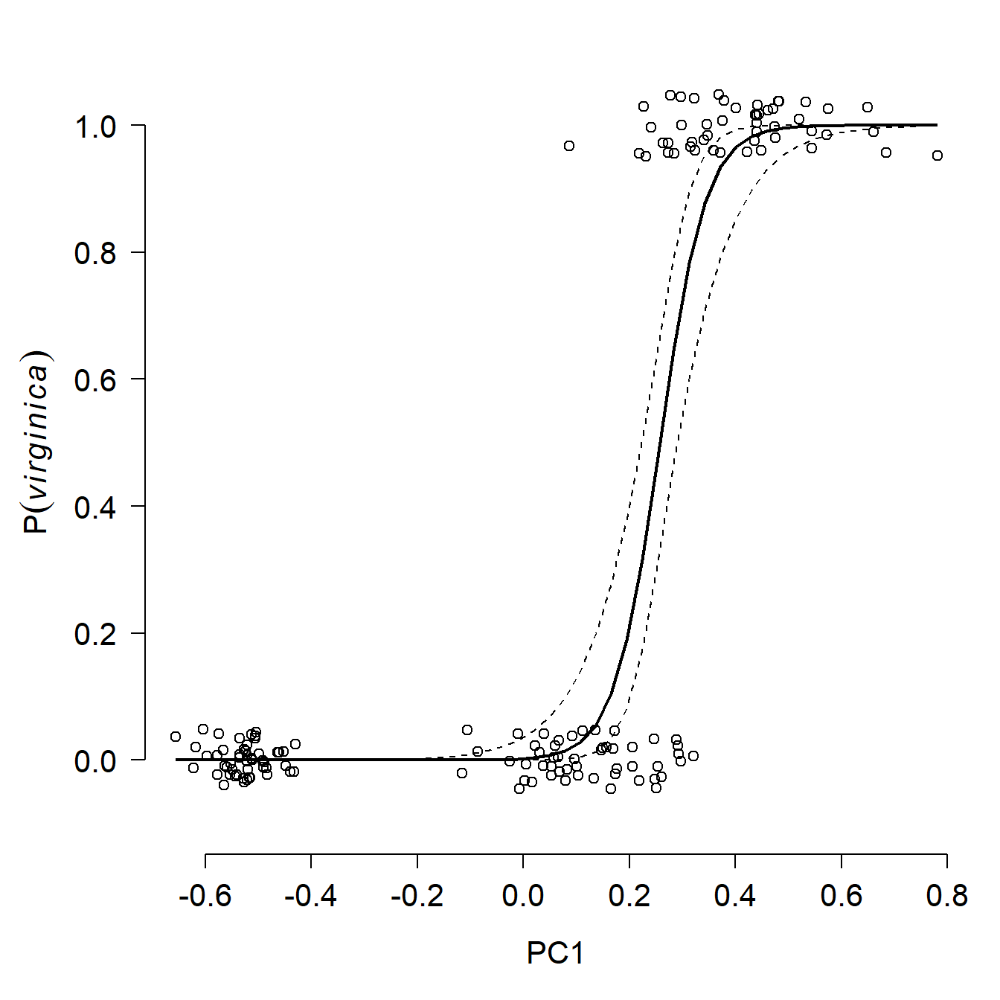
The screeplot shows that the stress decreases much more when going from 1 to 2 dimensions than it does for going from 2 to 3 dimensions. Stress becomes negligible for \(\ge\) 3 dimensions, because the original data had 3 dimensions and the two additional dimensions had almost 0 variance. The bend in the curve at k = 2 indicates that 2 is probably the optimal number of dimensions. If you’re not sure how many dimensions to use, examine biplots for both k and try to determine which plot is more interpretable biologically.
We can plot the scores of the samples much in the same way as we did the PCA scores in the previous example. We can also produce a biplot that works much the same way as the PCA biplot. We’ll explore those methods in the next section.
12.5.2.3 NMDS real data example
Load the dune dataset that comes with package vegan. This dataset contains cover class values for 30 species of plants on 20 dune meadow sites in the Netherlands. We’ll also load dune.env, the environmental data that describe each site.
library(vegan)
data(dune)
data(dune.env)
dat <- dune
env <- dune.envIf we are interested in in plant diversity among the sites, we could use multivariate methods to describe variation in plant cover. First, make some histograms of the cover of each plant species.
par(mfrow=c(5, 6), mar=c(4.1, 4.1, 1.1, 1.1))
for(i in 1:ncol(dat)){hist(dat[,i], main="")}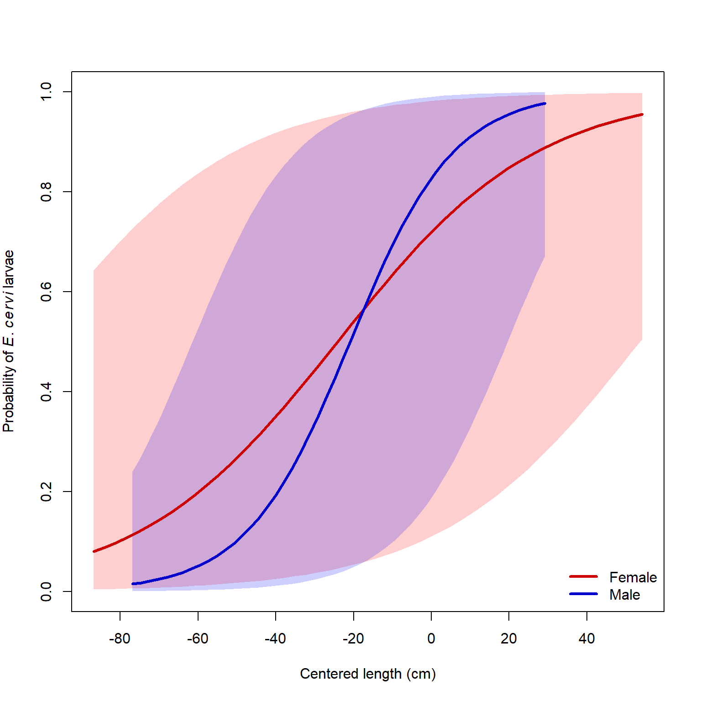
The cover of most species is clearly non-normal. This means that PCA would be difficult to fit. What’s more, the response variable (canopy cover class) isn’t really quantitative. Instead, it is ordinal. For example, category 2 represents greater proportion of plant cover than category 1, but it’s not clear how much more. So, an analysis based on rank order might make more sense than one based on actual values. That suggests using NMDS instead of PCA. Use vegan::metaMDS() to fit the NMDS, using the default Bray-Curtis distance metric.
set.seed(456)
p1 <- metaMDS(dat)## Run 0 stress 0.1192678
## Run 1 stress 0.1183186
## ... New best solution
## ... Procrustes: rmse 0.02027121 max resid 0.06496598
## Run 2 stress 0.1900911
## Run 3 stress 0.1192679
## Run 4 stress 0.19015
## Run 5 stress 0.1192678
## Run 6 stress 0.1183186
## ... New best solution
## ... Procrustes: rmse 9.438674e-06 max resid 3.090521e-05
## ... Similar to previous best
## Run 7 stress 0.1183186
## ... Procrustes: rmse 2.811111e-06 max resid 7.842694e-06
## ... Similar to previous best
## Run 8 stress 0.1192679
## Run 9 stress 0.1192678
## Run 10 stress 0.1192678
## Run 11 stress 0.1812933
## Run 12 stress 0.1889647
## Run 13 stress 0.1192679
## Run 14 stress 0.1192678
## Run 15 stress 0.1183186
## ... Procrustes: rmse 1.256982e-05 max resid 3.657271e-05
## ... Similar to previous best
## Run 16 stress 0.1192679
## Run 17 stress 0.1192678
## Run 18 stress 0.1192678
## Run 19 stress 0.1192678
## Run 20 stress 0.192224
## *** Solution reachedp1##
## Call:
## metaMDS(comm = dat)
##
## global Multidimensional Scaling using monoMDS
##
## Data: dat
## Distance: bray
##
## Dimensions: 2
## Stress: 0.1183186
## Stress type 1, weak ties
## Two convergent solutions found after 20 tries
## Scaling: centring, PC rotation, halfchange scaling
## Species: expanded scores based on 'dat'The NMDS fit has stress = 0.118, which is not too bad. Let’s take a look at the ordination.
plot(p1)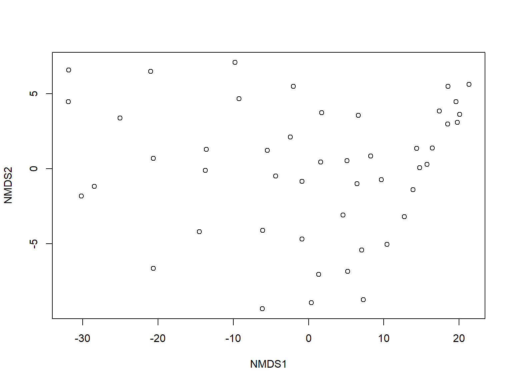
The default NMDS biplot is not very informative, so lets’ build the plot manually. While we’re at it, let’s use the environmental dataset to assign some category labels.
# management regimes
mans <- sort(unique(env$Management))
nman <- length(mans)
# land uses
uses <- sort(unique(env$Use))
nuse <- length(uses)
# colors and symbols
cols <- c("blue", "purple", "red")
pchs <- 15:18
env$col <- cols[match(env$Use, uses)]
env$pch <- pchs[match(env$Management, mans)]
# get site and species scores
px <- scores(p1, display="sites")
vx <- scores(p1, display="species")
# fancy plot
par(mfrow=c(1,1), mar=c(5.1, 5.1, 1.1, 1.1),
bty="n", las=1, lend=1,
cex.axis=1.3, cex.lab=1.3)
plot(px, pch=env$pch, col=env$col, cex=1.3,
xlim=c(-1.5, 1.5), ylim=c(-1.5, 1.5))
segments(0, 0, vx[,1], vx[,2])
mult <- 1.1
text(mult*vx[,1], mult*vx[,2], rownames(vx))
legend("bottomright", legend=mans, pch=pchs, cex=1.3)
legend("bottomleft", legend=uses, col=cols, pch=16, cex=1.3)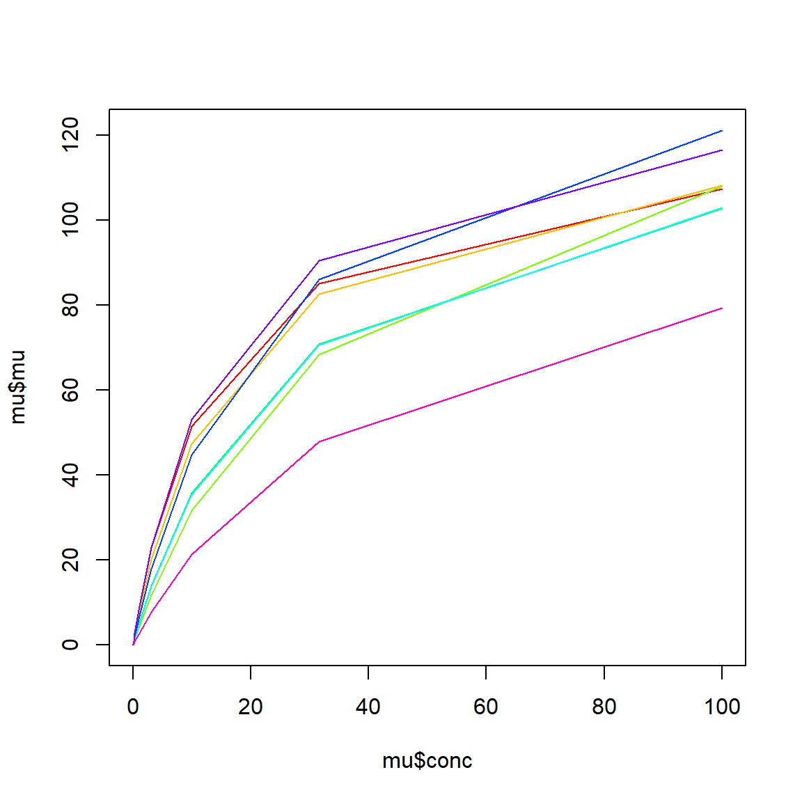
There’s a lot of information in that figure, so let’s break it down:
- Points show samples (sites).
- Proximity of two points reflects their dissimilarity in terms of the plant variables (closer = more similar).
- Point color encodes land use (hayfield, pasture, or both).
- Point shape encodes land management: BF (Biological farming), HF (Hobby farming), NM (Nature Conservation Management), and SF (Standard Farming).
- Vectors show how the species are associated with the ordination space. Species cover increases in the direction of the vector. For example, species “Juncarti” increases to the right and decreases to the left.
- Magnitude of each vector indicates the strength of the association. Vectors that are parallel to one of the NMDS axes are particularly interesting because they describe important gradients among the sites.
The figure is a bit of a mess, so we should try some different representations to help us make sense of it. Code one factor at a time:
par(mfrow=c(1,2))
cols1 <- rainbow(nuse)
cols1x <- cols1[match(env$Use, uses)]
plot(px, pch=16, col=cols1x, cex=1.3,
xlim=c(-1.5, 1.5), ylim=c(-1.5, 1.5))
legend("bottomright", legend=uses,
pch=16, col=cols1, cex=1.3)
cols2 <- rainbow(nman)
cols2x <- cols2[match(env$Management, mans)]
plot(px, pch=16, col=cols2x, cex=1.3,
xlim=c(-1.5, 1.5), ylim=c(-1.5, 1.5))
legend("bottomright", legend=mans,
pch=16, col=cols2, cex=1.3)
When only one factor is plotted, it’s a little easier to see the potential grouping by management style in the right panel. Styles SF, HF, and NM fall out mostly along NMDS2, but BF does not separate cleanly from the others. Let’s investigate the differences related to management styles.
We can add ellipses to help illustrate group centers (aka: “centroids”, or average positions in NMDS space) and the 95% CI of the centroids.
# define some colors
cols <- rainbow(nman)
colsx <- cols2[match(env$Management, mans)]
# make plot
par(mfrow=c(1,1))
plot(px, pch=16, col=colsx, cex=1.3,
xlim=c(-1.5, 1.5), ylim=c(-1.5, 1.5))
# add ellipse
ordiellipse(p1, env$Management,
kind="se", conf=0.95,
draw="polygon", col=cols, border=NA)
# plot group labels with white box behind at centroids
centx <- aggregate(p1$points[,1],
by=list(env$Management), FUN=mean)$x
centy <- aggregate(p1$points[,2],
by=list(env$Management), FUN=mean)$x
box.len <- 0.1 # fiddle with this to get boxes right size
rect(centx-box.len, centy-box.len,
centx+box.len, centy+box.len,
col="white", border="black")
text(centx, centy, mans, cex=1.3,
col=cols, font=2, adj=c(0.5, 0.45))
# add points again to make sure they show up
points(px, pch=21, bg=colsx, fg="black", lwd=2, cex=1.4)
legend("bottomright", legend=mans,
pch=21, pt.bg=cols, col="black", pt.lwd=2, cex=1.3)
The default colors produced by rainbow() can be horrendous, but you get the idea. There are better ways to get color palettes that you can explore. The figure shows that it is quite likely that at least some of the management groups differ from each other in terms of their plant cover. We can test this directly with MRPP.
mrpp(px, env$Management)##
## Call:
## mrpp(dat = px, grouping = env$Management)
##
## Dissimilarity index: euclidean
## Weights for groups: n
##
## Class means and counts:
##
## BF HF NM SF
## delta 0.5279 0.5845 1.055 0.8339
## n 3 5 6 6
##
## Chance corrected within-group agreement A: 0.2216
## Based on observed delta 0.792 and expected delta 1.017
##
## Significance of delta: 0.004
## Permutation: free
## Number of permutations: 999The MRPP shows significant separation between the management groups, but the relatively low A indicates that there is still a lot of the positioning left unexplained.
We can also use NMDS to test for relationships between the NMDS coordinates and continuous variables using envfit() (from the vegan package). Note that only columns 1, 2, and 5 are used in the routine because those are the columns that contain quantitative (or ordinal) potential predictors.
ef <- envfit(p1, env[,c(1,2,5)])
ef##
## ***VECTORS
##
## NMDS1 NMDS2 r2 Pr(>r)
## A1 0.96474 0.26322 0.3649 0.014 *
## ---
## Signif. codes: 0 '***' 0.001 '**' 0.01 '*' 0.05 '.' 0.1 ' ' 1
## Permutation: free
## Number of permutations: 999
##
## ***FACTORS:
##
## Centroids:
## NMDS1 NMDS2
## Moisture1 -0.5101 -0.0403
## Moisture2 -0.3938 0.0139
## Moisture4 0.2765 -0.4033
## Moisture5 0.6561 0.1476
## Manure0 0.2958 0.5790
## Manure1 -0.2482 -0.0215
## Manure2 -0.3079 -0.1866
## Manure3 0.3101 -0.2470
## Manure4 -0.3463 -0.5583
##
## Goodness of fit:
## r2 Pr(>r)
## Moisture 0.5014 0.002 **
## Manure 0.4247 0.018 *
## ---
## Signif. codes: 0 '***' 0.001 '**' 0.01 '*' 0.05 '.' 0.1 ' ' 1
## Permutation: free
## Number of permutations: 999The output shows that all three of A1 soil horizon thickness (A1), moisture category, and manure category were significantly related to the NMDS configuration. The plots below show some ways to illustrate these relationships. First, we can add vectors representing continuous variables to the ordination. These vectors are exactly like biplot arrows for variables that went into the ordination, and are interpreted the same way . If you include both ordinated variables and other variables fitted with envfit(), you should make them different colors.
# get coordinates of vectors (matrix)
ef.vec <- ef$vectors$arrows
# plot points
par(mfrow=c(1,1))
plot(px, pch=16, cex=1.3,
xlim=c(-1.5, 1.5), ylim=c(-1.5, 1.5))
# add envfit vector
segments(0, 0, ef.vec[1,1], ef.vec[1,2], col="red", lwd=2)
# multiplier to move label outwards (should be >1)
mult <- 1.2
text(mult*ef.vec[1,1], mult*ef.vec[1,2],
rownames(ef.vec)[1], col="red")
# not run:
# if more than one continuous envfit to plot:
#mult <- 1.2
#for(i in 1:nrow(ef.vec)){
# segments(0, 0, ef.vec[i,1], ef.vec[i,2],
# col="red", lwd=2)
# text(mult*ef.vec[i,1], mult*ef.vec[i,2],
# rownames(ef.vec)[i], col="red")
#}Factors that define groups, like the farming types above, can be encoded in the points by shape and/or color, and their uncertainty expressed with ellipses. Factors that are ordered, like Moisture and Manure, can be added to the plot as arrows. Adding arrows to connect centroids of the levels of an ordered factor is also a great way to show changes over time or space. For example, you could use season or year as an ordered factor to show changes over time; or, use latitude or elevation intervals as an ordered factor. Even if one of these variables is treated continuously, showing arrows by ordered groups (levels) can help capture nonmonotonic relationships that would be masked by a single envfit() vector. The figure below illustrates the difference between treating a continuous predictor, time, as an ordered factor vs. as a continuous variable.
The code below shows how to extract the coordinates for the arrows showing levels of an ordered factor.
# get matrix of level centroids (has all factors)
ef.fac <- ef$factors$centroids
# isolate moisture and manure rows of matrix
ef.moi <- ef.fac[grep("Moist", rownames(ef.fac)),]
ef.man <- ef.fac[grep("Manure", rownames(ef.fac)),]
# number of levels of each factor
nmois <- nrow(ef.moi)
nmanu <- nrow(ef.man)
par(mfrow=c(1,1))
plot(px, pch=16, cex=1.3,
xlim=c(-1.5, 1.5), ylim=c(-1.5, 1.5))
# add arrows
# notice how arrows are specified from the matrix as
# beginning x, beginning y, ending x, and ending y, and
# how bracket notation is used.
arrows(ef.moi[-nmois,1], ef.moi[-nmois,2],
ef.moi[-1, 1], ef.moi[-1, 2], col="red",
lwd=3, length=0.15)
arrows(ef.man[-nmanu ,1], ef.man[-nmanu ,2],
ef.man[-1, 1], ef.man[-1, 2], col="blue",
lwd=3, length=0.15)
legend("topright",
legend=c("Moisture gradient", "Manure gradient"),
lwd=3, col=c("red", "blue"), bty="n", cex=1.3)12.5.2.4 Hypothesis testing using NMDS
NMDS ordinations can also be used as the basis for hypothesis tests about the magnitude and direction of multivariate trends in experiments. If control and treated samples (or before and after samples) can be matched in pairs or groups, then the paths from the control/before to the treated/after samples can be thought of as the multivariate “response” to whatever the treatment was (McCune et al. 2002). This is because differences in position in NMDS space represent differences in terms of the original variables. The example below uses simulated data to illustrate the method.
- Left panel: NMDS ordination of samples. Arrows show change from “before” to “after”. Color of arrows signifies control treatment (black) or treated samples (red).
- Center panel: “Change vectors” translated so that they emanate from the origin. Magnitude of vector indicates magnitude of change from before to after treatment. Direction of vector indicates direction of change.
- Right panel: Change vectors translated to origin and scaled to unit length. Position of end points on unit circle indicate direction of change. In ecology these are also called “composition vectors” because they indicate changes in species composition regardless of magnitude of change.
The positions of the vector endpoints in the center panel can be used to test hypotheses about the overall change in the response variable matrix in response to treatment. An MRPP or other multivariate test such as PERMANOVA can be used to compare the locations of treatment groups in NMDS space. Differences in location in the center plot reflect both magnitude and direction of change.
Similarly, the positions of the composition vectors in the right panel can be used to test hypotheses about changes in the response variable matrix in response to treatment. Unlike the center panel, the differences in position in the right panel reflect direction of change only.
12.5.3 Other ordination techniques
PCA and NMDS were explored in detail because they are two of the most commonly used and applicable ordination techniques for biologists. There are other techniques out there that you may find useful but are beyond the scope of the course.
Principal coordinates analysis (PCoA) is a variation of PCA that can use any kind of distance metric. In one sense PCA uses the Euclidean distance metric because of its reliance on least squares. PCoA can use any distance metric, which may be desirable for data that do not meet the linearity and normality assumptions of PCA. PCoA works by converting distances into the elements of the crossproducts matrix S, which basically “pretends” that non-Euclidean distances are Euclidean.
Canonical ordination techniques simultaneously analyze two data matrices. Canonical ordination methods can be symmetric or asymmetric. In asymmetric methods, there is a response dataset and a predictor dataset. Reversing the roles of the matrices will change the outcome of the analysis. In contrast, symmetric methods treat both matrices the same. That is, in a symmetric ordination analysis, neither matrix is considered the “response” or “predictor” dataset. Reversing the roles of the matrices will not change the outputs.
12.5.3.1 Canonical asymmetric methods
Canonical asymmetric methods produce ordinations of a response matrix Y that are constrained to be linearly related to a second set of variables, the predictor matrix X.
Redundancy analysis (RDA) is an extension of multiple regression that models multivariate rather than univariate response values. Each ordination axis in RDA is called a “canonical axis” and is similar to a principal component. Each canonical axis in the response matrix Y is maximally related to a linear combination of variables in the predictor matrix X. RDA preserves the Euclidean distances among samples; this is a consequence of the relationship between RDA and multiple linear regression.
Canonical correspondence analysis (CCorA) is similar to RDA, but preserves a different distance metric (\(\chi^{2}\) or “chi-squared”) among the samples. CCorA may thus be more appropriate than RDA when data are nonnormal or when relationships are nonlinear.
Linear discriminant analysis (LDA) identifies linear combinations of variables in a predictor matrix X that classify observations in a response matrix Y. LDA can be thought of loosely as a multivariate analogue to multiple logistic or multinomial regression. Classification trees may present a more robust alternative to LDA in many situations.
12.5.3.2 Canonical symmetric methods
Canonical correlation analysis (CCA) is a constrained ordination technique where the ordination of one matrix is informed by multiple regression on another matrix. Given two data matrices A and B, with correlations among variables in A and B, CCA fits an ordination for both A and B where the canonical axes of each ordination are correlated with variables in the other matrix. In other words, CCA finds gradients in one matrix and tries to explain them in terms of information from another matrix. CCA is a powerful tool for exploratory analysis but can be confusing to fit and interpret.
Co-inertia analysis (CoIA) and Procrustes analysis (Proc) both seek ordinations of two data matrices A and B that represent relationships in both A and B simultaneously. CoIA and Proc work very differently but answer a similar question: how can samples be arranged in a reduced dimension space that preserves distances in terms of two sets of variables?
These techniques are described by Legendre and Legendre (2012) and McCune et al. (2002). The former reference has a more thorough mathematical treatment; the latter is more introductory. Both are excellent. Several newer references (Legendre and Legendre 2012, Borcard et al. 2018) include R code for implementing the methods.
Literature Cited
Because position is expressed in latitude and longitude, it is implicit that these are positions on a sphere. Euclidean distance between coordinates is assumes that the coordinates are on a plane, and so will be distorted. The distances are also in nonsensical units that combine degrees latitude and longitude, which are not interchangeable. If you ever need to calculate exact distances between geographic locations, transform the coordinates into a projected coordinate system like UTM (which will be in meters, by definition). Or, use the GIS functions in R which can work in spherical coordinates. Despite being incorrect from a GIS perspective, the distances calculated here are close enough for demonstrating NMDS.↩︎